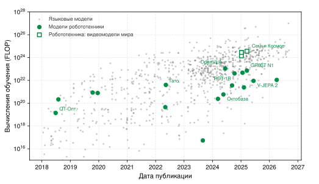
Содержание главы
Содержание
- 1 Причинная граница
- 1.1 Искусственный интеллект за пределами стекла
- 1.2 От предсказания к действию
- 1.3 Вопрос, на который отвечает эта книга
- 1.4 Определение каузальной границы
- 1.5 Три класса машин
- 1.6 Тест области физического AI
- 1.7 Машина в пяти уровнях
- 1.8 Когда ответственности отказывают вместе
- 1.9 Где встречаются безопасность, защищённость и подотчётность
- 1.10 Четыре краеугольных закона
- 1.11 Архитектура этой книги
- 1.12 Заблуждения и ловушки
- 1.13 Итоги
- 1.14 Историческая перспектива и дополнительное чтение
1 Причинная граница
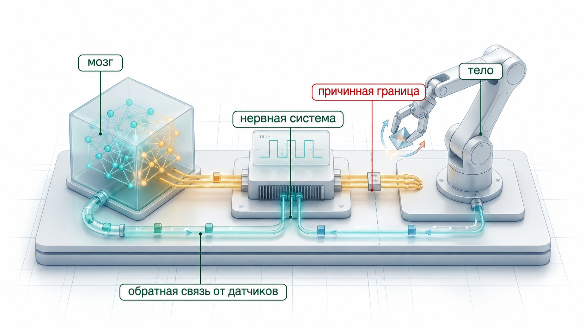
Цель
Почему лучший прогноз всё равно может привести к худшему физическому действию?
Обученная модель может правильно распознать задачу, но действовать слишком поздно, чтобы остановить движущуюся машину или предотвратить чрезмерную контактную силу. Если команда производит движение или тепло, замена прогноза не может отменить уже выполненную работу. Поэтому инженер должен связать качество модели с возможностями физической системы, временем, доступным для реагирования, и доказательствами, подтверждающими следующее действие. Независимый путь разрешения должен иметь возможность отклонить предложение и выполнить возможный резервный режим работы, даже если модель зависает. На причинной границе, где команды становятся физической работой, необратимость делает эти обязанности частью архитектуры системы.
Цели обучения
- Проследите, как системы машинного обучения эволюционировали от бестелесного прогнозирования через цифровое агентство к физическому воплощению, и объясните, почему этот прогресс дает физические данные, вычисления, оценку и развертывание.
- Объясните, почему действие, пересекающее причинно-следственную границу, требует рассуждений о последствиях, которые программный откат не может отменить.
- Вычислите, как задержка реакции влияет на тормозной путь движущейся машины.
- Примените тест на область применения, чтобы отличить физический ИИ от консультативного обучения и классического контроля.
- Отличать заученные предложения от разрешения на их выполнение в пятиуровневой машине.
- Диагностировать, как восприятие, время реакции и недостающая избыточность взаимодействовали при столкновении в Темпе.
- Соотнесите четыре закона с их общепринятыми названиями и с четырьмя частями книги.
1.1 Искусственный интеллект за пределами стекла
Когда классификатор изображений неправильно маркирует фотографию склада на сервере, последующий фильтр может отбросить метку до того, как какая-либо машина переместится; Когда политика мобильного робота неправильно определяет расстояние между проходами и привод приводит в движение мотор-колеса, шасси уже ускоряется в сторону стойки. В оффлайновом консультативном прогнозировании, цифровом агентстве и физическом воплощении вычисления приобретают разные последствия, поскольку их результаты входят в цикл действий, а физический ИИ отличается от двух других тем, как ведут себя агентность, время и восстановление (таблица 1).
В автономном или консультативном случае модель выдает прогнозы на основе статического набора данных до того, как любое последующее действие закроет цикл обратной связи. Независимо от того, классифицирует ли изображение, прогнозирует отток клиентов, оценивает ограничивающую рамку или ранжирует результаты поиска, модель работает в разомкнутом цикле. Его входное распределение является экзогенным, поскольку выдаваемые им прогнозы не изменяют процесс, который генерирует последующие тестовые примеры. Поскольку эти запросы поступают независимо, ориентированное на пропускную способность обслуживание может группировать множество входных данных (
Появление агентного машинного обучения ознаменовало архитектурный переход от пассивного однократного прогнозирования к активному последовательному принятию решений. Агентская модель, оснащенная циклами рассуждений и обсуждениями во время тестирования, формулирует многоэтапные планы, поддерживает внутреннее состояние во всех трассировках выполнения и автономно вызывает внешние инструменты. Эти инструменты выполняют запросы к базе данных, вызывают веб-API, запускают сгенерированный код в средах выполнения и координируют программные субагенты. В этом режиме цикл выполнения замкнут. Действие, выполненное на шаге
В контролируемой программной среде это агентство может действовать внутри защитной оболочки, «за стеклом». Такие среды могут предоставлять агентским системам три структурных привилегии, хотя внешние службы и последующие вызовы инструментов могут выходить за рамки этого диапазона:
- Эластичное виртуальное время: контролируемая программная среда может подождать, пока модель вычислит. Независимо от того, требуется ли агенту
или вычислений во время тестирования для планирования следующего вызова инструмента, среда может сохранять свое моделируемое состояние до тех пор, пока действие не будет выполнено. Внешние сервисы продолжают развиваться самостоятельно. - Откат транзакций и песочница: выполнение инструмента может происходить в изолированных контейнерах, виртуальных машинах или транзакционных базах данных. Когда действие вызывает ошибку внутри этого конверта, программные исключения фиксируют ошибку, транзакции базы данных откатываются или контейнер перезапускается с чистого моментального снимка. Эти механизмы не могут отменить последствия, уже наступившие за его пределами.
- Дискретные символические интерфейсы: Действия представляют собой структурированные строки, схемы JSON или полезные данные API, синтаксис и достоверность которых могут быть проверены детерминированными компиляторами и линтерами перед выполнением.
физический ИИ представляет собой появление агентности в физическом мире. Физическая система искусственного интеллекта не вызывает программный API внутри виртуальной песочницы; его выходы пересекают причинную границу в физические актуаторы. Выходной сигнал изученной модели становится уставкой (целевым значением, к которому движется привод контроллера низкого уровня), уставкой становится электрический ток в фазной обмотке двигателя (одна из неподвижных медных катушек, ток которой вращает двигатель), а ток становится электромагнитным крутящим моментом. Крутящий момент ускоряет физическую массу через коробки передач, рычаги и контактные поверхности, разделяющие пространство с людьми и объектами. Это физическое воплощение лишает всех цифровых привилегий:
- Непрерывное время: Физическое время движется вперед согласно ньютоновской механике независимо от состояния процессора. физически объект управления, управляемое устройство, такое как колесная база или рука робота, не делает паузу, пока нейронная сеть размышляет. В движущемся роботе задержка вычислений не является программной задержкой. Машина, движущаяся со скоростью
, которой требуется время , чтобы начать торможение, приближает к препятствию под действием неуправляемой инерции. Задержка – это физическое расстояние. - Механическая и термодинамическая необратимость: Переходы физических состояний не допускают программного отката. Как только программное обеспечение управляет током через инвертор (силовую электронику, которая переключает источник постоянного тока на фазные токи двигателя), электромагнитная сила ускоряет массу, рассеивая необратимое джоулево тепло (
в каждой фазной обмотке) и изменяя состояния механического контакта. Кинетическая энергия ( ) не может быть вынесена мусором, а механическое воздействие невозможно отменить восстановлением контрольной точки. На команду, приводящую в движение машину, можно ответить только другим физическим действием, которое само по себе требует времени, расстояния и энергии. - Однопакетное жесткое выполнение в режиме реального времени: На работающей машине каждое новое предложение действия зависит от наблюдений, сформированных предыдущим движением, поэтому живой цикл не накапливает независимые наблюдения в пропускной пакет (
). Контуры управления также должны соблюдать жесткие сроки в реальном времени в нескольких связанных временных масштабах: контуры тока двигателя с частотой в десятки килогерц, контуры с частотой около килогерца, которые проверяют движение и регулируют контактную силу, изученные политики, обновляющиеся с частотой десятки герц, и более медленные модели, интерпретирующие сцену несколько раз в секунду. Раздел 1.7 показывает скорость работающей машины. Пропущенный срок не ухудшает качество обслуживания пользователей; это может дестабилизировать физически объект управления.
Потеря этих привилегий вызывает архитектурную реакцию. Глубокие нейронные сети представляют собой аппроксиматоры статистических функций, уязвимые к сдвигу распределения, сенсорному шуму и галлюцинациям, поэтому им не может быть предоставлена непосредственная власть над физическими исполнительными механизмами. Таким образом, физический ИИ отделяет предложение от разрешения. Обученные модели с высокой производительностью действуют только как предлагающие на непривилегированном уровне (мозг). Независимый, детерминированный путь разрешения (в нервной системе) проверяет каждое предложение на соответствие физическим ограничениям машины и допускает (принимает к исполнению) только те предложения, которые проходят. Он также поддерживает исполняемый резервный режим на изолированном оборудовании реального времени. Путь разрешения делает все это до того, как какое-либо действие пересечет причинную границу в контролируемую физическую систему (Тело).
| Режим развертывания | Подложка для исполнения | Первичный выход | Экологическая муфта | Семантика времени | Отказ и восстановление | Модель безопасности и полномочий |
|---|---|---|---|---|---|---|
| Офлайн/консультативный прогноз | Облачные серверы/ускорители | Консультативный прогноз (метка, оценка, токен) | Разомкнутый цикл (статический набор данных, экзогенные данные) | Возможность пакетной обработки в выбранном ящике для подачи | Отбросить или пересчитать перед дальнейшими действиями | Консультативный; последующее программное обеспечение или человек решает |
| Агент ML | Цифровые программные среды | Выполнение инструмента (полезная нагрузка API, фрагмент кода) | Замкнутый цикл в программном обеспечении (действия изменяют состояние) | Гибкое виртуальное время в контролируемых средах | Программное исключение, перезапуск контейнера, откат БД | Разрешение песочницы; Области API и виртуальные шлюзы |
| физический ИИ | Воплощенная физическая объект управления | Физическая сила и движение (ток, крутящий момент) | Замкнутый цикл в физике (действия меняют мир) | Неумолимое непрерывное время; задержка - это расстояние | Необратимая работа; рассеивание энергии; ущерб | Предложение против разрешения; детерминированное вето во время выполнения |
физический ИИ появился не только за счет масштабирования языковых моделей. Оно представляет собой слияние двух давних инженерных традиций: робототехники и управления, которые научились надежно действовать в физическом мире, который отталкивает назад, и машинного обучения, которое научилось извлекать представления из данных в масштабе. За восемьдесят лет изученная модель шаг за шагом продвигалась от периферии машины к ее исполнительным механизмам, и каждый шаг менял то, что должна была гарантировать архитектура окружающих систем. Эта история объясняет, что физический ИИ унаследовал от классического управления и цифрового обучения и почему проблема его центральных систем является новой.
1.2 От предсказания к действию
Актерская линия начинается с обратной связи. Кибернетика Винера описывала как животных, так и машины как системы, которые измеряют результат своего собственного действия и используют его для коррекции следующего (Wiener 1948 г.), а теория управления вскоре научилась оценивать состояние движущейся системы по шумным измерениям (Kalman 1960 г.). Первым промышленным роботам на уровне поставленной задачи этого было мало нужно. В 1961 году манипулятор Unimate начал штабелировать детали, отлитые под давлением, в компании General Motors, воспроизводя пошаговые команды, хранящиеся на магнитном барабане (Computer History Museum 1961 г.). Ничто в этой программе не могло заметить человека на пути руки, поэтому защищать людей означало держать их вне досягаемости. Машина действовала, но не воспринимала и ничего в ней не узнавала. Робототехника и управление, обучение действию и освоение машинного обучения, прогнозирование проходят как верхнюю и нижнюю полосы рисунок 1, пока они не сольются.
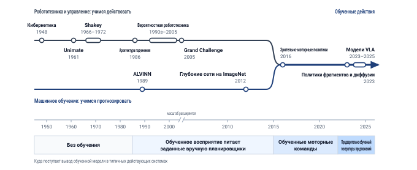
Шейки, разработанный в SRI с 1966 по 1972 год, объединил восприятие с планированием (Nilsson 1984 г.). Он получал изображения с камер и показания дальномера, сохранял модель своего окружения и использовал планировщик STRIPS для составления последовательности действий, ведущих к достижению поставленной цели. Эта организация, позже обобщенная как смысл-план-действие (S·P·A), рассматривает действие как последний шаг вычислений. Шейки двигался медленно, и его дизайнеры рассматривали его движение как асинхронное с управляющими им программами (Nilsson 1984 г.). Предполагалось, что мир ждет, пока компьютер подумает. Шейки также привел деталь, предвосхищающую архитектуру этой книги. Когда один из его кошачьих бакенбардов коснулся препятствия, робот рефлекторно остановился под планировщиком.
↪ Парадигма смысл-план-действие и организованная ею таксономия неудач разработаны в Парадигма «Восприятие — планирование — действие».
Брукс перевернул эту организацию. Его архитектура подчинения построила контроль на основе слоев простого асинхронного поведения, каждый из которых связан с ощущением и действием. Более высокие уровни могли подавлять выходные данные более низких, но нижние уровни продолжали работать по мере добавления более высоких (Brooks 1986 г.). Быстрый уровень, который продолжает работать, пока медленный занят или неисправен, является предшественником пути разрешений, который разрабатывается в этой книге. Однако ни одна из организаций не позволяла легко писать от руки восприятие или ловкие движения, а планировщики и уровни поведения одинаково останавливались на тех навыках, которыми обладает малыш. У этой трудности есть имя. Парадокс Моравека1 показывает, что сенсомоторные навыки, которые люди выполняют с небольшими сознательными усилиями, может быть трудно воспроизвести с помощью вычислений, поэтому обучение стало привлекательным для физических задач.
Обучение уже вошло в цикл. В 1989 году небольшая нейронная сеть ALVINN сопоставила изображения с камеры и лазерного диапазона с направлением, в котором должно двигаться транспортное средство, и следовала реальным дорогам в некоторых полевых условиях (Pomerleau 1989 г.). В 1990-е годы робототехника также сделала неопределенность явной. Вероятностная робототехника представляет то, что машина думает о себе и своем окружении, в виде распределений вероятностей, обновляемых по мере поступления действий и измерений (Thrun и др. 2005 г.). DARPA Grand Challenge проверила эти идеи в масштабе. В первой гонке в 2004 году ни одна машина не преодолела более небольшой части пустынной трассы. В 2005 году было закончено пять автомобилей, и победитель, Стэнли из Стэнфорда, полагался преимущественно на машинное обучение и вероятностные рассуждения (Thrun и др. 2006 г.). В системах такого типа обучение в основном оценивало, на что похож мир, а рукописные планировщики и контролеры решали, что делать. Десять лет спустя финал конкурса DARPA Robotics Challenge предложил роботам работать на смоделированном месте катастрофы, управлять транспортным средством, открывать дверь, поворачивать клапан и подниматься по лестнице. Организаторы намеренно ухудшили качество связи с удаленными операторами-людьми, так что каждый робот должен был выполнять часть каждой задачи в условиях контролируемой автономности, а не в режиме прямого телеуправления (Krotkov и др. 2017 г.). Даже на этом этапе человек оставался рядом с петлей.
↪ Отсутствующие примеры восстановления ALVINN и выявляемая ими ошибка начисления сложных процентов разработаны в Раздел 5.3.
Затем глубокое обучение изменило то, как много может воспринимать машина. В 2012 году глубокая сверточная сеть, обученная на графических процессорах, классифицировала фотографии ImageNet с ошибкой, значительно ниже предыдущей (Krizhevsky и др. 2012 г.), а обученные детекторы распространились на системы восприятия роботов и автоматизированных транспортных средств. Архитектура вокруг них обычно оставалась модульной, а выученное восприятие питало планировщик, записанный в виде правил или оптимизации. Полученные результаты по-прежнему оставались прогнозами, но никто не стоял между ними и тормозами. Транспортное средство Темпе, исследованное в раздел 1.8, было машиной такого типа.
В последующие годы обучение дошло и до самого привода. Левин и его коллеги обучили сверточные сети, которые сопоставляли необработанные изображения с камеры непосредственно с крутящими моментами двигателей робота для таких задач, как навинчивание крышки на бутылку (Levine и др. 2016 г.). Системы захвата обучались на основе сотен тысяч собственных попыток, собранных группами роботов-манипуляторов, работающих параллельно (Levine и др. 2018 г.; Kalashnikov и др. 2018 г.). Глубокое обучение с подкреплением (обучение сети методом проб, ошибок и числового вознаграждения) в моделировании позволило создать контроллеры для ножного робота и ловкой руки, которые перешли на аппаратное обеспечение (Hwangbo и др. 2019 г.; OpenAI и др. 2019 г.). После этого шага данные изменили характер. Робот, который учится на собственных попытках, выбирает состояния, которые он будет видеть, поэтому данные его обучения зависят от его собственного поведения.
Обучение имитации, которое тренирует политику воспроизведения записанных демонстраций, сделало человеческие демонстрации практическим путем к новым навыкам манипулирования, и две идеи сформировали политику, используемую сейчас. Разбивка действий предсказывает короткую последовательность будущих действий на основе каждого наблюдения. Авторы этой конструкции частично мотивировали то, как ошибки клонированной политики накапливаются с течением времени (Zhao и др. 2023 г.). Политики распространения генерируют последовательности действий путем итеративного шумоподавления, что позволяет одной политике представлять несколько разных способов, которыми демонстратор может выполнить одну и ту же задачу (Chi и др. 2025 г.). Полученный результат превратился в краткий план будущего движения, выполняемый диспетчерами, находящимися под ним.
Последний шаг изменил то, откуда приходят научные предложения. В цифровых программных системах базовые модели превратились в агентные механизмы рассуждения, способные разлагать абстрактные цели, генерировать планы и вызывать внешние инструменты. Для воплощения этого агентного рассуждения в физическом воплощении потребовалось обоснование мультимодальных представлений в пространственной геометрии, непрерывной динамике и координации движений. Большие наборы многозадачных данных, собранные на многих роботах, подготовили почву (Brohan, Brown, Carbajal, Chebotar, Dabis, и др. 2023 г.; Open X-Embodiment Collaboration и др. 2024 г.), а в период с 2023 по 2025 год несколько групп показали, что модель, предварительно обученная на изображениях и тексте веб-масштаба, может быть точно настроена для непосредственного воспроизведения действий робота. Эти модели видение-язык-действие (VLA) имеют один общий механизм. Предварительно обученная магистраль языка видения кодирует изображения с камеры и инструкции, а боевая головка преобразует выходные данные магистрали в двигательные команды. Голова либо декодирует действия как дискретные токены, так же, как языковая модель декодирует слова (Brohan, Brown, Carbajal, Chebotar, Chen, и др. 2023 г.; Kim и др. 2024 г.), или создает непрерывный кусок действия, короткую последовательность будущих заданных значений из одного вывода (Black и др. 2024 г.). Магистраль с миллиардами параметров не может работать со скоростью контроллера, поэтому в последних разработках работа распределяется по скоростям. Медленная модель интерпретирует сцену, а модель быстрого действия или декодер на роботе генерирует фрагменты, которые выполняют контроллеры (Bjorck и др. 2025 г.; Gemini Robotics Team 2025 г.). Эти системы представляют собой устаревшие примеры одного шага, в котором движение предлагает предварительно обученная магистральная сеть общего назначения, а не политика, обученная для выполнения одной задачи на одном роботе. Размеры и скорости, о которых сообщают их авторы, собраны позже в Таблица 2. Бегущая машина принимает ту же иерархию с двумя предлагающими: модель намерения, медленная модель языка видения, которая считывает сцену и выбирает цель, и политика фрагментов, быстро обучаемая политика, которая генерирует фрагменты действий для достижения этой цели. Их ставки зафиксированы на карточке машины (раздел 1.4.2). Поскольку изученная модель общего назначения теперь может предлагать движение для машины общего назначения, решение о том, какой компонент может разрешить это движение, становится вопросом проектирования для каждой машины, которая его использует.
↪ Затраты на разделение работы между медленной моделью намерений и политикой быстрого фрагмента на работающей машине, связанные с памятью, разработаны в Раздел 3.5.2.
Масштаб этого перехода от предварительной подготовки в веб-масштабе легко переоценить. В базе данных Epoch AI политики открытых действий роботов обучались на вычислительных ресурсах в сотни и тысячи раз меньших, чем самые крупные языковые модели того времени (рисунок 2) (Epoch AI 2026 г.). Разрыв примерно в 350 раз меньше для модели «зрение-язык-действие» 2024 года и примерно в 7,000 раз меньше для модели открытого робототехнического фонда 2025 года, и только 25 модели робототехники в базе данных вообще содержат вычислительную оценку. Таким образом, физический ИИ не является уменьшенной копией истории масштабирования языковой модели. Ученые, предлагающие ее, ограничены тем, что можно получить от машин, действующих в мире, и тем, что может работать на самой машине — два ограничения, которые в частях I и II этой книги рассматриваются как первоклассные.
Название «физический ИИ» появилось недавно, и с 2024 года оно широко применяется практически к любому искусственному интеллекту, который воспринимает и действует в физическом мире (NVIDIA 2026 г.). Приведенная выше история проходит через две исследовательские традиции, которые охватывают во многом одну и ту же тему. Воплощённый ИИ происходит от аргумента Брукса о том, что разумное поведение возникает из тела, находящегося внутри окружающей среды и взаимодействующего с ней, а не только из абстрактного представления (Brooks 1991 г.). Кибер-физические системы называют интеграцию вычислений и сетей с физическими процессами (Lee 2008 г.), и они несут в себе дисциплину синхронизации и проверки встроенной инженерии (Lee и Seshia 2017 г.). Воплощенный ИИ обеспечивает большую часть знаний, используемых в этой книге, а киберфизические системы обеспечивают большую часть его практики расчета времени и проверки. Темой книги является то, где эти два понятия встречаются в приводе, и определение, приведенное ниже, намеренно уже, чем общепринятое в отрасли, достаточно узкое, чтобы при проверке объема в раздел 1.6 можно было применить его к данной машине.
Прочитанная как одна история, эта история шаг за шагом перемещает изученную модель к приводу, как показывает полоса под осью времени рисунок 1. Сначала ничего не изучалось. Затем полученные знания стали использоваться в рукописных планировщиках, изученные правила генерировали двигательные команды и, наконец, предварительно обученные модели общего назначения начали предлагать движение для многих видов машин. На каждом этапе гарантия того, что разделение или человеческий осмотр, используемые для поставки, должны были перемещаться внутри машины. Приходят знакомые проблемы проектирования систем машинного обучения, и каждая из них приобретает физические ставки. Данные перестают быть фиксированным корпусом, поскольку собственные действия машины выбирают, что она будет наблюдать дальше. Вычисления перестают быть вопросом только пропускной способности и стоимости, поскольку за поздний ответ платят за тормозной путь. Оценка перестает быть оценкой на устаревших примерах, потому что значимая компетентность проявляется только в замкнутом цикле. Развертывание перестает быть рутинным развертыванием версии, поскольку выпуск предоставляет машине власть над движением рядом с людьми. Когда изученный результат становится необратимым действием, ни одна из этих проблем не может быть решена внутри модели. Они принадлежат всей машине и встречаются на границе, где ее команды становятся физической работой.
1.3 Вопрос, на который отвечает эта книга
Именно из-за этого сближения проблема теперь стоит перед всей областью, а не перед несколькими специалистами по робототехнике. Центральный вопрос этой книги заключается в том, почему лучшее предсказание все же может привести к худшему физическому действию и что должна обеспечить остальная часть машины, чтобы усвоенное предложение стало полезной работой в разумных пределах. Ответ в книге представляет собой аргумент, состоящий из четырех связанных между собой шагов. Физические пределы тела ограничивают то, о чем может просить любое предложение. Компетенция обученного предлагающего распространяется только на состояния, которые охватываются его данными и замкнутой оценкой. По обеим причинам независимый путь разрешений, а не сама модель, должен решать, что может выполняться на каждом такте. Доказательства, собранные в отношении всей машины, затем определяют условия эксплуатации, при которых предоставляется это разрешение. Аргумент в первую очередь требует общего словаря. Этот словарь охватывает причинную границу и цену задержки на ней, сферу применения физического ИИ, пятиуровневую модель машины, которая отделяет предложение от разрешения, а также четыре закона, которые организуют остальную часть книги.
Одна машина проводит аргументацию через каждую главу. Складской передвижной манипулятор должен забрать предмет с конвейера, открыть подпружиненную дверцу клетки и пронести груз через общий с людьми проход. Эти задачи объединяют способности, которые часто изучаются отдельно. Машина должна распознавать незнакомый объект, выбирать захват, координировать руку и основание и реагировать, когда контакт или сцена отличаются от ожиданий. Обучение делает возможным разнообразное поведение; инженерия должна превратить это поведение в полезную, повторяемую физическую работу.
Эта книга развивает способности проектировать, обучать, интегрировать, оценивать и обслуживать такую машину в оправданных эксплуатационных пределах. Его повторяющаяся складская машина представляет собой иллюстративный инженерный проект, а не отчет о квалифицированном развертывании. Одна и та же задача объединяет физические бюджеты, обучающие эксперименты, решения во время выполнения и доказательства для обслуживания. Когда доказательства неполны, инженер должен определить, какие измерения, новый опыт или изменение конструкции будут поддерживать следующую возможность.
Рассмотрим мобильную базу, подъезжающую к концу стеллажного прохода в тот момент, когда её модель обрабатывает изображение с камеры. Прежде чем вернётся очередное предложение действия, в проход заходит рабочий. Компьютер всё ещё может отклонить это предложение, но робот продолжал двигаться всё время вычисления, поэтому выбор действия требует рассуждения сразу о предсказании и о физическом состоянии, в котором оно будет исполнено. Следовательно, три вещи должны удерживаться вместе: модель должна распознать полезное действие, механизм исполнения должен оценить его, пока наблюдение остаётся актуальным, а корпус должен быть способен реализовать допущенное движение или выполнимую альтернативу. Само по себе более сильное предсказание не может вернуть зазор, уже израсходованный во время вычисления, — вот почему инженерная задача ведёт от физических пределов к архитектуре, проверяющей каждое предлагаемое действие.
Построение такой машины требует вклада четырёх дисциплин, которые обычно работают порознь. Машинное обучение поставляет восприятие и предложения действий. Компьютерные системы определяют, насколько быстро эти предложения вычисляются и перемещаются по памяти (Williams и др. 2009 г.). Механика и теория управления устанавливают, какие движения объект физически способен выдержать. Встроенные системы обеспечивают планирование в реальном времени и правила шин, связывающие предложение с актуатором. Все четыре ответственности сходятся в одном вопросе среды исполнения: может ли предложенное действие быть исполнено при текущих условиях машины. Эта книга развивает рассуждение, необходимое для принятия и обоснования такого решения.
Определение 1.1: физический ИИ
физический ИИ (Physical AI) — это инженерия машин с замкнутым контуром, в которых обученные модели влияют, без синхронного одобрения человеком, на физические действия, изменяющие последующие наблюдения.
- Значимость: Производительность модели становится свойством работающей машины. Её действия должны укладываться в физические пределы объекта и доступное время реагирования.
- Отличие: Проверка объёма применимости далее в этой главе сочетает обученную модель, существенную физическую обратную связь и делегированные полномочия. Ни модель, используемая только как советчик, ни автоматизированная машина без обучаемого компонента не удовлетворяет всем трём критериям.
- Типичная ошибка: Отношение к корпусу как к периферийному устройству для модели. Полезное предложение всё равно требует независимого решения о допущении, основанного на текущем состоянии, физических пределах и доступном резервном варианте.
Аргумент начинается там же, где и определение, — с различия между предложенным действием и его физическим эффектом. Затем короткий расчёт остановки переводит в число то, что задержка стоит на каузальной границе. Задокументированное столкновение далее в главе показывает, как эти ответственности отказывают вместе, а четыре закона затем сводят их воедино.
1.4 Определение каузальной границы
Это различие между предложенным действием и его физическим эффектом отделяет консультативные вычисления от физического ИИ. Консультативная модель, выдающая инференс на панель или возвращающая JSON-нагрузку по сети, не имеет прямого электрического или механического сопряжения с физическими актуаторами: оператор или программный фильтр ниже по цепочке может проверить, валидировать или отклонить её вывод до того, как будет израсходована какая-либо физическая энергия. Цифровые ошибки не безобидны (оператор, действующий по ошибочному указанию, может причинить серьёзный ущерб), но консультативное ПО не может напрямую изменять физическое состояние. Когда же автоматизированная система получает делегированные полномочия из определения 1.1 — напрямую превращать вычисленное предложение в физическое движение, — арбитраж безопасности уже не может оставаться внешней добавкой. Он должен жить внутри архитектуры машины, на каузальной границе между цифровым намерением и физическим следствием.
1.4.1 От предложенного действия к движению
В современных вычислительных фреймворках исполнение action_chunk = policy(observation) порождает тензор с плавающей точкой. Этот тензор представляет неподтверждённое предложение; чтобы превратить его в физическое движение, требуется вся цепочка промежуточных контроллеров, шинных интерфейсов и силовой электроники. Каузальная граница — это точный интерфейс, через который допущенная цифровая команда начинает вызывать физическое изменение в объекте.
Обученная политика обычно предлагает траекторию будущих положений сочленений, целевых скоростей или моторных моментов. Эти числовые массивы остаются чисто информационными описаниями, пока низкоуровневый контроллер не провалидирует, не примет и не начнёт их исполнять. Внутреннее представление и горизонт предсказания таких последовательностей действий развиты в Раздел 3.5.1; здесь системное различие — между предложением действия и авторизацией его необратимых последствий.
Эта авторизация управляется трактом допущения — независимым механизмом, определённым в раздел 1.7, который единолично обладает полномочием передавать команды на моторные приводы. Тракт допущения проверяет, удовлетворяет ли предлагаемая траектория физическим кинематическим ограничениям, соблюдает ли пределы по скорости и ускорению и может ли завершиться безопасно в пределах текущих временных квот. После допущения уставки траектории поступают в выделенные моторные контроллеры. Контур положения сравнивает каждую уставку с измеренным положением сочленения и вычисляет коррекцию, а контур тока задаёт ток двигателя, создающий момент, который требуется коррекции.
↪ Временные характеристики шины и границы джиттера при передаче команд от тракта допущения к приводам развиты в Раздел 4.5.
Рассмотрим электрический двигатель, управляемый широтно-импульсной модуляцией. Программная запись обновляет регистр сравнения в таймере микроконтроллера, что определяет, как долго каждый силовой ключ остаётся включённым в каждом периоде коммутации. Получающаяся импульсная последовательность управляет транзисторными ключами инвертора, который превращает питание постоянного тока в ток в обмотках статора (неподвижных катушках). Этот ток создаёт магнитное поле, которое тянет за магниты ротора (вращающейся части), создавая момент, ускоряющий вал ротора, передаточные шестерни и механическую полезную нагрузку. Эта последовательность асимметрична. Перезапись запланированной уставки в памяти требует пренебрежимо малой энергии и может быть отменена до следующего такта, но изменение команды, уже подавшей ток в обмотку, требует физической работы против механической инерции за конечное время. Последующая команда может задействовать тормоза или реверсировать ток привода, но этот корректирующий манёвр требует собственного физического пути и должен соблюдать строгие пределы актуатора.
Определение 1.2: Причинная граница
Каузальная граница — это интерфейс, через который цифровая команда порождает физические силы, токи или потоки.
- Значимость: Предложение можно отклонить до того, как оно изменит объект. После исполнения оно может изменить окружение, рассеять энергию и изменить последующие наблюдения.
- Отличие: Восстановление команды в памяти не восстанавливает прежнее физическое состояние машины. Восстановление требует другого физического действия — со своими пределами и последствиями.
- Типичная ошибка: Предполагать, что отмена программной задачи останавливает инициированное ею движение. Машине нужен выполнимый остановочный или удерживающий отклик, даже когда её «предлагатель» перестал вычислять.
Офлайн-обучение с учителем оценивает модели на статических наборах данных, где предсказания никогда не влияют на будущие тестовые входы. Воплощённый робот не может полагаться на такое разделение. Когда мобильная база поворачивает шасси, её бортовые камеры тут же захватывают иное поле зрения. Когда манипулятор подталкивает коробку, изменяются её пространственные координаты и силы контакта. Когда машина движется по проходу, её сближение с персоналом меняется в реальном времени. Замкнутая обратная связь, введённая в раздел 1.2, применяется напрямую к обученной модели, поскольку действующая машина преобразует саму среду, порождающую её будущие входы обучения и инференса.
В любой воплощённой системе среда эволюционирует через динамику замкнутого контура: последующее физическое состояние
↪ Корректирующая агрегация и данные интервенций, защищающие политику от ковариационного сдвига, развиты в Раздел 5.8.
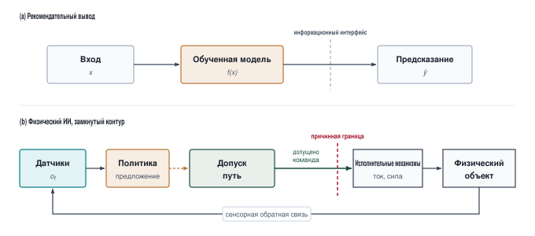
1.4.2 Работающая машина
Чтобы проследить, как предложенное действие пересекает каузальную границу на мобильном манипуляторе со склада из раздел 1.3, книге нужен один набор чисел, которым могут пользоваться все последующие главы. С ними остановка, выводимая в Глава 2, временные характеристики, планируемые в Глава 4, и свидетельства, которых требует Часть IV, — всё это описывает один и тот же робот. Таблица 2 фиксирует пятнадцать параметров машины, которые чаще всего используют последующие выводы, каждый — с меткой свидетельства, определённой руководством читателя (измеренное, выведенное, даташит или иллюстративное, либо выбранное для проектного решения). Используемый далее бюджет остановки берёт пять из них: предел привода, правдоподобное замедление, свободный зазор, задержку перед торможением и срок действия разрешения чанка внутри этой задержки. Этой главе нужны только эти пять и, в одной из типичных ошибок, время перехвата внутри контура. Остальные строки задействуют идеи (остановку с ограничением рывка, prefill и decode модели намерений, исследования перехвата управления человеком), которые развивает раздел, названный в столбце Basis каждой строки. Они приведены здесь, чтобы каждая глава читала одни и те же значения. Последующие разобранные примеры ссылаются на значения по имени параметра. Для полных аппаратных спецификаций даташит машины в Паспорт машины каталогизирует все остальные входы вместе с их программными ключами реестра.
| Параметр | Значение | Категория | Обоснование |
|---|---|---|---|
| Масса с нагрузкой |
368 kg | Derived | База, манипулятор и полный стеллаж тотов; верхняя граница (Раздел 2.1) |
| Предел привода |
1.5 m/s | Illustrative | Классовый профиль складской базы |
| Скорость в проходе |
1.3 m/s | Chosen | Задана ниже сухого потолка скорости (Раздел 12.3.1) |
| Правдоподобное замедление |
2 m/s² | Illustrative | С нагрузкой, на сухом полу, чьё сцепление даёт коэффициент трения |
| Предел рывка при остановке |
7.11 m/s³ | Derived | Установлено для остановки с ограничением рывка, у которой предел замедления равен |
| Свободный зазор до стеллажа |
1.10 m | Illustrative | Зазор, внутри которого должна уместиться остановка |
| Задержка перед торможением |
133.6 ms | Derived | Возраст наблюдения, срок действия разрешения чанка, такт, цикл шины и начало торможения (Раздел 8.4.1); не включает интервал диспетчеризации до допущения, который оплачивается резервом (Раздел 13.6.2) |
| Такт допущения |
1 ms | Derived | Период выбранной частоты контура допущения (Раздел 4.3.1) |
| Срок действия разрешения чанка |
60 ms | Chosen | Наибольшее время, в течение которого допущенный чанк может управлять без продления (Раздел 4.4) |
| Шаг уставок |
25 ms | Chosen | Шаг между уставками chunk-политики (Раздел 3.5.1) |
| Период перепланирования чанка | 50 ms | Derived | Целое число шагов уставок |
| Задержка модели намерений | 336 ms | Derived | Prefill плюс decode на прикладном процессоре (Раздел 3.4.1) |
| Частота модели намерений | 2 Hz | Chosen | Наибольшая частота, чей период покрывает задержку |
| Перехват внутри контура |
605 ms | Derived | Нижняя граница реакции человека плюс консольное видео и рукопожатие (Раздел 14.2.2) |
| Перехват вне контура |
4.47 s | Derived | Время перехвата из условия 90-го перцентиля исследования плюс видео и рукопожатие |
Если эти параметры фиксированы, каждая последующая проблема проектирования на этой платформе начинается с одной и той же физической основы. Он спрашивает, к какому пределу приближается заданное действие и может ли машина выполнить гарантированную защитную реакцию до того, как этот запас будет исчерпан. Первая разница в цене - это тормозной путь, и четырех рядов карты, предел привода привода, вероятное замедление, свободный путь и задержка перед торможением - достаточно, чтобы оценить его.
1.4.3 Задержка поглощает тормозной путь
Когда загруженная складская база движется по проходу со скоростью
Период действия разрешения принадлежит в худшем случае, даже если путь разрешения перепроверяет каждый тик, из-за того, что может видеть эта проверка. Каждый тик проверяет допустимый фрагмент на соответствие ограничениям, которые уже имеет путь разрешения (свежесть фрагмента, период действия его разрешения и кинематические границы, измеренные относительно колесных и шарнирных энкодеров). Путь разрешений не имеет собственного конвейера камеры. Таким образом, на пути обнаружения, который моделирует этот бюджет, свидетельство того, что работник ушел, достигает тормозов только через изученный путь восприятия и предложение о замене. Если предлагающий останавливается или не отвечает работнику, последний допущенный фрагмент продолжает работать до тех пор, пока не истечет срок действия его разрешения, и только тогда путь разрешения дает команду на остановку. Этот термин намеренно исключает один интервал — интервал от отправки до приема (время, в течение которого изученная политика вычисляет предложение о замене и путь разрешения допускает его). Его длина зависит от того, где проходит предлагающий и путь разрешений, а также от того, как они взаимодействуют, а это решения, которые еще не были приняты в этой главе. Раздел 13.6.2 поэтому распределяет его, и готовый бюджет оплачивает его из запаса, который оставляет этот элементарный бюджет.
В бюджете есть два члена, которые растут по-разному со скоростью: путешествие во время задержки растет линейно (
Каждый вклад в бюджет поступает от работающей машины. Его скорость, замедление, свободное расстояние и задержка перед торможением — это строки карты машины (таблица 2), а пять членов этой задержки берутся из одного и того же реестра MLSysIM, поэтому данные ноутбука — это те, которые уточняются в каждой последующей главе.
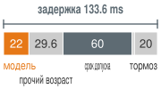
Обученная магистраль — это 22 ms задержки 133.6 ms; срок действия разрешения стоит дороже.
Инженерный расчёт 1.1: Останавливается ли база на безопасном расстоянии?
Проблема: Нагруженная база движется к концу стойки на пределе привода привода, и рабочий может выйти в конце стойки. Путь разрешения должен останавливать основание внутри свободного пространства для конца стойки, указанного на карточке машины. Подходит ли элементарный бюджет остановки уравнение 1, какой член доминирует и какая часть задержки принадлежит изученной модели?
Переменные:
- Скорость
1.5 m/s, предел привода привода (иллюстративно). - Достоверное замедление
2 m/s² при загрузке на сухом полу (иллюстративно). - Четкое расстояние
1.10 m (иллюстративно). - Задержка перед торможением
133.6 ms (производная). Это сумма пяти условий реестра. Первый — это возраст наблюдения за кадром камеры, который первым показывает работника, 51.6 ms, который включает в себя основу восприятия 22 ms (остальное — это половина экспозиции, считывание датчика, передача, обработка изображения и передача предлагающему, перечисленные в Раздел 8.4.1). Второй - это период действия разрешения на фрагмент, равный 60 ms, самый длинный, который допустимая команда может привести в действие приводом, прежде чем должен сработать путь разрешения. Остальные условия — это один такт разрешения 1 ms, один цикл шины 1 ms и начало торможения 20 ms. Он исключает интервал отправки-приемки по причине, указанной в уравнение 1.
Математика:
Результат: Элементарный бюджет соответствует, с 337.1 mm в запасе. Предел привода привода находится выше скорости перехода, поэтому торможение доминирует: требуется 2.8× ход задержки, а задержка добавляет 35.6 percent к тормозному пути. На половинной скорости, 0.75 m/s, задержите ход вдвое до 100.2 mm и притормозите на четверть до 140.6 mm, для остановки 240.8 mm.
Системное понимание: Магистральная сеть изученной модели учитывает 22 ms задержки или 33 mm перемещения; только период действия разрешения на фрагмент стоит 90 mm. Каждая добавленная миллисекунда задержки в любом месте цепочки стоит 1.5 mm на этой скорости, поэтому более медленная, но более точная модель — это стоимость расстояния, которую должен покрыть бюджет. Запаска – это еще не запас прочности. Раздел 12.3.1 добавляет границу локализации, защитный запас, ошибку отслеживания и более длительную остановку тормоза с ограничением рывка (того, который ограничивает рывок, скорость изменения замедления, увеличивая торможение, а не увеличивая его). Вместе они превышают свободное расстояние на пределе привода привода, поэтому карта устанавливает скорость в проходе на 1.3 m/s.
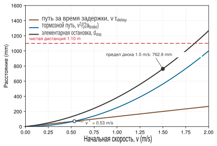
Предел движения работающей машины лежит существенно выше вычисленной в ноутбуке точки пересечения скоростей (рисунок 4), поэтому бо́льшую часть тормозного пути задаёт торможение, а не задержка, и сумма всё ещё остаётся ниже пунктирной линии свободного расстояния до того, как будут добавлены какие-либо последующие допуски. Эти значения — репрезентативные параметры и выведенный профиль задержек, а не измеренные тормозные пути реального шасси, но они уже показывают два рычага, которыми располагает проектировщик. Сокращение задержки реакции сжимает линейный член, тогда как снижение крейсерской скорости сжимает оба члена, причём тормозной — квадратично. Выбор модели исключительно по офлайн-точности упускает первый рычаг, поскольку добавленная задержка инференса — это добавленный путь.
Вычисленный бюджет моделирует один конкретный путь обнаружения, и его именование показывает, какие обученные вычисления он оплачивает. Рабочего видит обученный стек восприятия, значит, магистраль восприятия входит в возраст наблюдения. Собственное время вычислений политики чанков не появляется, потому что именно lease, а не политика, ограничивает, как долго допущенный чанк может продолжать движение после того, как пропозер замолчал. Машина может также нести второй, независимый защитный путь с собственными сенсорикой, таймингом, питанием и резервной логикой — например, сертифицированный сканер безопасности, подключённый к приводам. Остановка, запущенная этим путём, минует диспетчеризацию восприятия и lease полностью. Члены магистрали и lease покидают его задержку, а их место занимают её собственные задержки сенсорики и коммутации; тормозной путь и допуски остаются. При такой развязанной архитектуре защитную остановку определяет задержка защитного пути, а не время исполнения нейронной сети. Промышленные автоматические транспортные тележки (AGV) реализуют это разделение уже сегодня: стандарты безопасности требуют сертифицированных сканеров безопасности, останавливающих машину до контакта с человеком, независимо от систем управления парком или навигации (International Organization for Standardization 2023 г.). Эта книга надстраивает обученные сенсомоторные пропозеры поверх детерминированных ядер безопасности и анализирует архитектурные контракты, необходимые между ними.
↪ Собственный временной бюджет пути сканера и то, как программный бюджет остановки отображается на сертифицированные функции безопасности, рассматриваются в Раздел 12.9.3.
Развёртывание этого бюджета в реальных условиях требует нескольких дополнительных физических допусков. Помимо допусков, названных в системном выводе ноутбука (локализация, защитный запас, ошибка слежения и более длинная остановка с ограничением рывка), реальные контроллеры должны также учитывать немоделируемое начальное ускорение и деградировавшее сцепление шин с полом. Динамические препятствия ещё более усложняют бюджет зазора: если пешеход идёт навстречу мобильному роботу со скоростью
1.4.4 Необратимость и восстановление
Бюджет остановки оценивает одно следствие необратимости. Другое — то, чем становится восстановление. Транзакция базы данных, прервавшаяся, восстанавливает состояние, с которого начинала, но у захвата, необратимо деформировавшего оснастку, или обмотки, изоляция которой деградировала от перегрева, более раннего состояния, к которому можно вернуться, нет. Поэтому восстановление на физической машине — это новая траектория, а не обращение вспять.
Корректирующие команды могут затормозить моторы, разжать захват или спланировать объезд, но каждая из них сама является движением, ограниченным моментом, который могут развить актуаторы, трением, а также скоростями и ускорениями, достижимыми для приводов. Какой предел определяющий, зависит от того, что делает машина. Для мобильной платформы это тормозной зазор при инерции. Когда рука смыкает губки на хрупкой детали или упирается в сборочную оснастку, определяющими становятся сила контакта, податливость шестерён и ремней между мотором и захватом (податливость трансмиссии) и нагрев обмоток. Поскольку восстановление — это ограниченное движение, путь разрешений должен перед допуском действия проверить, что из получившегося состояния будет существовать выполнимое восстановление; проверка после слишком поздна.
↪ Контактные нагрузки, которые трансмиссия передаёт захваченной детали или защёлке — определяющая величина руки в этом контексте, — рассматриваются в Раздел 2.4.4.
1.5 Три класса машин
Когда складской мобильный манипулятор едет по проходу, его главная инженерная задача кинетическая: сохранить достаточно зазора, чтобы безопасно остановиться перед препятствием. Когда тот же робот давит на защёлку двери, определяющее ограничение смещается к механике контакта — регулированию сил взаимодействия, чтобы не повредить механизм или заготовку. Когда, удерживая подвешенный груз неподвижно, машина не совершает механической работы, её актуаторы должны выдерживать непрерывный момент заторможенного ротора, не исчерпывая тепловой запас и не «просаживая» общую электрическую шину. Поскольку каждая фаза задачи тратит разный физический запас, книга называет три класса машин по запасу, который каждый из них тратит (рисунок 5).
Первый класс, мобильность, определяемая массой (класс 1), тратит тормозной зазор. Мобильная платформа, средство доставки или воздушный дрон несёт значительный импульс и не может остановиться мгновенно. Поступательная скорость, задержка управления и сенсорики, а также доступное тормозное замедление или обратная тяга совместно задают пространственный зазор, необходимый, чтобы остановить или перенаправить движение.
Второй класс, манипуляция, определяемая контактом (класс 2), тратит запас силы и деформации. Когда артикулированная рука давит на жёсткую оснастку, минутные смещения положения могут порождать разрушительные контактные силы на долях миллиметра. Физический контакт — одновременно и средство успеха задачи (посадка детали или открытие защёлки требует намеренного усилия), и непосредственная опасность. Инженерная задача — подводить wrench’и (совокупные силы и моменты), необходимые для завершения сборки, гарантируя, что контактные силы никогда не превысят пределы механической текучести полезной нагрузки или манипулятора.
Третий класс, работа, определяемая энергией и теплотой (класс 3), тратит запасы теплоты и электропитания. Удержание тяжёлого груза или сопротивление гравитации требует непрерывного тока моторов, вызывающего постоянный джоулев нагрев в обмотках актуаторов, даже когда суставы неподвижны. Одновременные пиковые токи инверторов приводов, вычислительных ускорителей и сенсорных нагрузок могут вызывать просадку напряжения на общей DC-шине. Система должна выдерживать эти тепловые и электрические нагрузки на всём эксплуатационном профиле, резервируя достаточную энергию и тепловой запас для безопасного защитного прерывания.
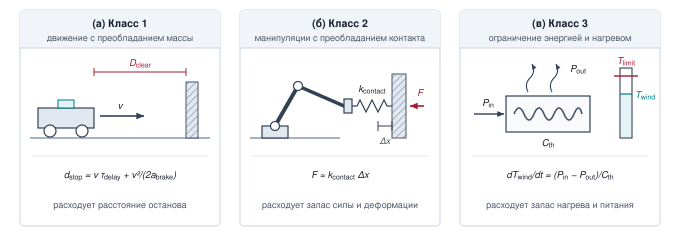
Эти три класса выделяют доминирующие физические ограничения, а не взаимоисключающие категории оборудования. Практический робот переходит между всеми тремя режимами в течение одной задачи. Работающая машина объединяет колёсную платформу, артикулированную руку, навигационный лидар и запястные камеры. Сквозная обученная политика может координировать одновременные траектории платформы и предложения руки (Fu и др. 2024 г.), но интегрированная машина должна одновременно соблюдать конверты безопасности каждого режима. Рука на фиксированном основании всё равно сталкивается с тепловыми и шинными напряжёнными пределами при длительном удержании, так же как колёсная платформа встречает контактные ограничения при стыковке у рабочего места.
Системный взгляд 1.1: Тигль гуманоида
Гуманоидный робот обнажает тесную связь всех трёх режимов. Пойманный сместившийся груз возмущает динамический баланс и требует немедленного восстановительного шага, которому нужен пиковый момент суставов. Этот скачок момента потребляет большой ток из общей DC-шины и вносит быстрый приток тепловой энергии в обмотки суставов. Если сеть распределения питания проседает или тепловая защита ограничивает ток, восстановительный шаг проваливается, и машина падает. Защита бортового вычислительного стека от сброса сама по себе не даёт переходной механической энергии, необходимой для стабилизации корпуса. Гуманоидные примеры в конце частей этой книги проверяют, как каждый системный принцип переживает эти тесно связанные физические требования.
↪ Механика мульти-контактного баланса, на которую опирается восстановительный шаг гуманоида, рассматривается в Центроидальная динамика и управление с плавающей базой.
Определить, тратит ли задача тормозной зазор, контактную силу или тепловой запас, — значит понять для инженера, какой физический бюджет связывает, независимо от того, как реализован контроллер. Требует ли машина также архитектуры «пропозер-и-разрешение» физического AI, а не классического контура обратной связи или офлайн-инструмента, зависит от отдельного теста того, как её решения генерируются и авторизуются.
1.6 Тест области физического AI
Рука в fulfillment-центре может следовать фиксированному профилю движения под ПИД-контроллером (классическим вручную настроенным законом обратной связи, корректирующим пропорционально текущей ошибке, её накопленной сумме и скорости изменения). Она может также исполнить офлайн-траекторию, заранее проверенную и загруженную техником-человеком, или получать моменты суставов напрямую от обученной политики, работающей на сенсорных кадрах реального времени. Хотя во всех трёх режимах действуют одинаковые электрические моторы и передачи, они налагают разные архитектурные обязательства на вычислительную систему. Тест области устанавливает операционные границы, определяющие физический AI на протяжении всей книги.
Область физического AI определяется одновременным пересечением трёх структурных критериев:
- Обученная статистическая модель: система опирается на политику, энкодер восприятия или модель мира, чьё поведение во время исполнения возникает из обучающих данных, а не из инспектируемой спецификации в замкнутой форме, как у глубоких нейронных сетей или diffusion-политик (Chi и др. 2025 г.). Корректность нельзя формально доказать для всех конфигураций состояний из одного исходного кода; инженеры должны установить операционную валидность эмпирически на заданной области эксплуатации. Напротив, линейная модель установки, подогнанная классической идентификацией системы,3 где неопределённость параметров даёт доказуемые запасы устойчивости, в эту категорию не попадает. Нейронная политика высокой ёмкости — попадает.
- Существенная физическая обратная связь: действия системы изменяют материальное состояние окружающего физического мира, и эти изменения состояния непосредственно определяют, что измеряют её сенсоры в последующие шаги времени — по классической механике, термодинамике или электромагнетизму. Среду нельзя поставить на паузу или откатить, а рассеянную в неё энергию нельзя вернуть.
- Делегированная власть: выходы системы достигают исполнения без синхронного человеческого одобрения каждого цикла управления. В машине, отвечающей также второму критерию, это исполнение есть актуация, значит, власть физическая. Обученный компонент держит эту власть всякий раз, когда его выход (сырое наблюдение, семантическая оценка состояния или предложенная траектория движения) может распространиться к живым актуаторам без такого одобрения. Обученной сети не обязательно писать напрямую в регистры драйверов моторов; система обладает делегированной властью всякий раз, когда обученные сигналы активно формируют нижестоящие команды актуации. Добавление нижестоящих проверок безопасности или детерминированных ограничителей частоты не отменяет эту власть, пока принятые предложения всё ещё приводят движение оборудования.
Вместе эти три критерия очерчивают область физического AI. Диаграмма Венна трёх множеств в рисунок 6 формализует эту границу, помещая физический AI в центральное пересечение, где сходятся обученная модель, существенная физическая обратная связь и делегированная власть. Каждое попарное пересечение содержит системы, отвечающие лишь двум из трёх критериев. Консультативные системы помещают обученную модель внутрь физического процесса — например, техник проверяет обученные траектории инструмента перед загрузкой на фрезерный станок, — но человек одобряет каждое действие. Цифровая автономия исполняет обученные выходы без человеческого одобрения, как автоматический торговый движок, но её действия приземляются в программное обеспечение, а не в физику. Классическое управление автоматически замыкает физический контур обратной связи, как ПИД-регулятор скорости, но опирается на аналитический закон управления, а не на обученную модель. Исключение этих попарных пересечений ограничивает проектную задачу системами, где статистическая неопределённость сталкивается с физической необратимостью напрямую.
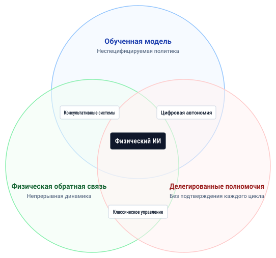
Сама по себе обученная модель не превращает машину в систему физического ИИ. Рассмотрим офлайн-генератор траекторий, оптимизирующий гладкие пути с помощью обученной диффузионной модели. Если инженер-технолог должен проверять, валидировать и загружать эти траектории инструмента на ЧПУ-фрезерный станок перед резкой металла, статистическая модель работает лишь как консультативный инструмент. Конечная физическая власть остаётся у человека. Аналогично модель зрения, подсвечивающая дефекты на экране сборочной линии, лишь помогает человеку при контроле, не замыкая физический контур.
И наоборот, делегированная власть не требует сквозного нейронного управления. Большинство производственных автономных систем применяют модульные архитектуры, где глубокие нейронные сети занимаются восприятием, а детерминированные планировщики траекторий вычисляют фактические уставки для актуаторов. Такие системы проходят тест на делегированную власть за счёт восприятия: если неотверенная детекция объектов или оценка ограничивающих рамок запускает автоматический манёвр уклонения или экстренное торможение, обученное представление напрямую определяет динамику объекта управления. Испытательный автономный автомобиль из аварии в Темпе, разобранный в раздел 1.8, — именно такая машина: меняющиеся классификации в его модульном восприятии питали предсказания пути, от которых зависело, затормозит ли он.
Разделённая автономия (shared autonomy) относится к физическому ИИ всякий раз, когда обученная подсистема изменяет текущее движение раньше, чем человек-оператор успевает вмешаться. Например, в роботизированной хирургической консоли с обученными тактильными виртуальными фиксаторами ассистирующая политика прикладывает реальные силы к манипуляторам мастер-инструмента, ведя хирурга вокруг деликатных анатомических структур. Даже если хирург несёт административную ответственность за операцию, высокочастотные силовые сигналы изменяют физический контакт с тканями в пределах обычной неврологической задержки реакции человека (обычно 150 ms to 250 ms). Поскольку машина динамически навязывает обученное пространственное ведение, не требуя от хирурга просматривать и подтверждать каждую микропоправку, она осуществляет делегированную власть над физическим движением.
Классифицируя неоднозначную машину, инженеры должны оценивать каждый из трёх критериев независимо. Внедрение независимого детерминированного вето — например, аналогового тормозного реле, срабатывающего от сертифицированного защитного лидара, — не лишает машину делегированной власти, поскольку обученные предложения всё ещё управляют всем номинальным движением вплоть до порога вмешательства. Напротив, требование к оператору проверять и авторизовать каждую команду траектории перед передачей надёжно устраняет эту власть. Когда проект удовлетворяет всем трём критериям, он квалифицируется как физический ИИ, и его вычислительная архитектура обязана соблюдать жёсткие временные и причинные границы, установленные в раздел 1.4.
Контрольная точка 1.1: Обязательные бюджеты и проверка объема
Удовлетворение теста на область действия привязывает статистическую неопределённость напрямую к аппаратным последствиям. Чтобы проектировать системы, безопасно работающие при этих требованиях, инженерам по вычислительным системам необходимо проследить, как распределены тайминги, оценивание состояния и власть управления вдоль пути исполнения от сырых кадров датчиков до физического движения актуаторов.
1.7 Машина в пяти уровнях
Если чанковая политика работающей машины замирает посреди прохода, нечто иное, чем политика, всё ещё должно уметь остановить шасси. Если политика выдаёт чанк, который провёл бы манипулятор через руку коллеги, нечто иное, чем политика, должно его отвергнуть. Поэтому воплощённой машине нужна архитектура, не позволяющая обученным моделям писать напрямую в актуаторы, которые они могут повредить, но при этом позволяющая им направлять физическое поведение.
Тело (Body) устанавливает, какое движение, силу и механическую мощность аппаратное обеспечение физически способно выдержать. Мозг (Brain) порождает обученные предложения, предназначенные действовать в пределах этих возможностей. Посредник между ними — Нервная система (Nervous System) — координирует коммуникацию и управление, сохраняя и временной запас, и аппаратную власть, необходимые для перехвата и отказа недопустимой команды. Добавление интерфейса, где команды становятся токами, и среды, в которой машина действует, даёт пятиуровневую модель, идущую от обученных вычислений до физического мира:
- Мозг (уровень 1): обученные модели, которые интерпретируют сенсорные наблюдения и предлагают кандидатные цели, траектории или моменты. Генерация предложенной траектории или последовательности уставок не даёт какой-либо внутренней власти исполнять её.
- Нервная система (уровень 2): детерминированные коммуникационные шины, планировщики реального времени и управляющие контуры, связывающие предложения с физическим исполнением. Её путь разрешения оценивает, фильтрует или отклоняет предложения против свежих сенсорных данных и инвариантных физических пределов, а также исполняет резервный вариант, показанный осуществимым из текущего состояния при заявленных допущениях о восприятии, объекте управления и времени реакции, когда предлагающий даёт сбой.
- Тело (уровень 3): физический объект управления, включая мотор-приводы, трансмиссии, электромагнитные обмотки, механические связи и накопители энергии, доставляющий механическое действие.
- Граница (уровень 4): жёсткий физический и электрический интерфейс, где цифровые регистры превращаются в напряжения или токи актуаторов и где физические явления регистрируются через сенсорные преобразователи как сырые измерения.
- Мир (уровень 5): внешняя физическая среда (поверхности, полезные нагрузки, препятствия, окружающее освещение и люди-партнёры), которая непрерывно развивается по законам физики независимо от того, измеряет ли её машина.
Список упорядочивает уровни по абстракции, от обученных вычислений до физики, а не по пути, которым следует команда. Команда покидает Нервную систему, пересекает Границу записью в регистр и лишь затем гонит ток через обмотки Тела. Граница стоит в списке после Тела, потому что она собирает преобразователи на обоих краях машины: записи в регистры, питающие обмотки, и захват сенсоров, превращающий свет, силу и движение в числа. Именно в этих местах машина обменивается энергией и информацией с Миром. Половина уровня, отвечающая за актуацию, — это причинная граница, определённая ранее в главе. Граница предложений, определяемая ниже, уровнем вовсе не является. Это линия между Мозгом и Нервной системой, разделяющая предложение и разрешение.
Конкретная реализация физического ИИ часто отображает эту иерархию на отдельные вычислительные ярусы. Обученные предлагающие компоненты работают на хостах с высокопроизводительными ускорителями (например, прикладной процессор в паре с GPU или нейронным процессорным блоком). Путь разрешения исполняется на независимом микроконтроллере реального времени или выделенном ядре ОС реального времени (RTOS). Токовые контуры, регулирующие фазные токи моторов, работают прямо на выделенных мотор-приводах. Эта архитектурная изоляция укоренена в строгих временных гарантиях и границах локализации отказов, а не в конкретных семействах кремния или номинальных названиях операционных систем.
↪ Нагруженный тест двухпроцессорного сплит, реализующий эту изоляцию, разработан в Раздел 13.7.
Управление (governance) не является шестым уровнем в этой иерархии управления реального времени. Вместо этого оно служит операционной и жизненноцикловой оболочкой, охватывающей все пять. Управление определяет, какая сущность владеет действительной властью команд, какие верификационные свидетельства позволяют машине работать и когда эта лицензия прекращается и подлежит обновлению. Переходы управления разворачиваются в человеческих и операционных масштабах времени — интервенций безопасности, выкаток политик и релизов обслуживания, — а не в миллисекундных ритмах управляющих контуров реального времени.
↪ Автомат управления полномочиями, который передает каждый канал исполнительного механизма ровно одному владельцу во время передачи, разработан в Раздел 14.3.
Определение 1.3: Граница предложения
Граница предложений — это линия между обученной моделью, которая может лишь предлагать действие, и путём разрешения, независимым механизмом с ограниченной задержкой, который модель не может задержать или повредить и который один может позволить действию достичь актуатора. Путь разрешения валидирует каждое предложение против свежих сенсорных данных, стоп-конверта (пространства состояний, из которого машина способна безопасно замедлиться до полной остановки до столкновения с препятствием) и резервной траектории, показанной осуществимой из текущего состояния. На работающей машине алгоритмические проверки допуска остаются нерейтинговым слоем производительности (не сертифицированным на функционально-безопасный уровень) поверх отдельных сертифицированных защитных функций. Раздел 12.9.3 объясняет это различие. Если любое условие нарушено, путь разрешения отклоняет предложение в пределах установленной границы реакции.
- Значимость: не позволяет выходам обученной модели напрямую управлять актуаторами. Эта архитектурная защита надёжна лишь до тех пор, пока независимое восприятие, динамические модели и резервные манёвры пути разрешения остаются физически валидными.
- Отличие: даже политика глубокого обучения с подкреплением, обученная выдавать моменты в суставах, обладает нулевой сырой властью записи в актуаторы; её выход остаётся просто предложением, пока явно не допущен путём разрешения.
- Типичная ошибка: считать путь разрешения косметическим пост-обрабатывающим фильтром или ограничителем выхода, а не автономным надзорным механизмом, способным перехватить управление, когда обученный предлагающий зависает, нарушает дедлайны, выдаёт патологические значения или замолкает.
Граница предложений определяет, кто владеет властью одобрить действие, тогда как причинная граница отмечает физический интерфейс, где допущенная команда изменяет состояние объекта управления. Нервная система перекрывает этот разрыв, проверяя предложения против жёстких ограничений перед подачей питания на приводы.
Читатели, искушённые в классической теории управления, узнают в этом дизайне надзорную архитектуру. Конкретно, граница предложений реализует runtime assurance. В классических архитектурах Simplex сложный высокопроизводительный контроллер (здесь — обученная политика) парный с сертифицированным базовым контроллером и координируется логикой решений, определяющей, какая подсистема управляет объектом (Seto и др. 1998 г.; Sha 2001 г.). Таблица родословной в раздел 1.10 (таблица 3) сопоставит термины этой книги с их устоявшимися именами, когда четыре закона будут сформулированы.
↪ Обеспечение выполнения физического ИИ, которое объединяет обученное предложение с резидентным защитным контроллером и селектором выхода, разработано в Раздел 12.1.
Изоляция аппаратных отказов сама по себе не гарантирует безопасности, поскольку архитектурная независимость также ограничивает сенсорные входы пути разрешения. Обученный путь детекции, использованный в стоп-бюджете, учитывает цену задержки реакции, но его лизинг не защищает от ошибки восприятия, порождающей своевременные, но небезопасные предложения. Если монитор принудительного исполнения валидирует предложенную траекторию с помощью той же обученной конвейерной обработки восприятия, что её синтезировала, единственная ошибка восприятия одновременно повредит оба компонента. Поэтому конвейеры восприятия, выдающие власть исполнения, должны иметь отличные от обучаемых моделей режимы отказа.
Поперёк пяти вложенных уровней в рисунок 7 характерные рабочие частоты охватывают четыре порядка величины. Непрерывный физический Мир находится внизу, за ним следует событийно-таймированная Граница, токовые контуры 10–25 kHz механического Тела и контур разрешения 1 kHz Нервной системы. Наверху иерархический Мозг работает от уставок 40 Hz до моделей намерений 2 Hz. Заметный зазор между Мозгом и Нервной системой отмечает фундаментальную границу предложений: компоненты выше этой линии могут лишь формулировать предложения, тогда как только детерминированные подсистемы ниже неё обладают властью командовать физическими актуаторами. Отражённые на уровнях рабочие частоты соответствуют референсной архитектуре, разбираемой в этой книге, а не неизменным физическим константам каждой робототехнической платформы. Последующие главы выводят эти временные бюджеты напрямую из динамики задач и характеристик механического объекта управления. Фундаментальным для всех систем физического ИИ остаётся граница предложений, отсекающая обученные вычисления от неконтролируемой власти исполнения.
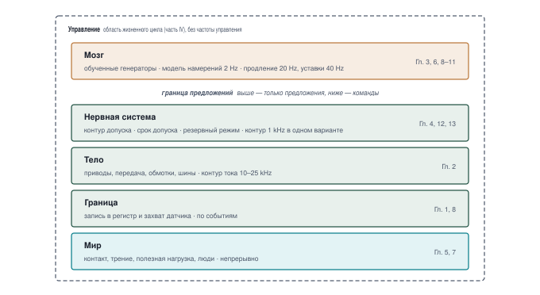
Развёртывание способного физического ИИ требует балансировать выразительные предложения политики с детерминированными гарантиями исполнения. Это разделение ответственности не требует отвергать каждое несовершенное предложение сразу; механизмы вмешательства реального времени могут спроецировать траекторию на безопасные ограничения или плавно смешать коррекции, сохраняя прогресс задачи при соблюдении физических инвариантов. Поэтому оценка систем должна разделять три вопроса: чего обученный предлагающий достигает в изоляции, насколько эффективно интегрированная машина исполняет при штатном надзорном фильтровании, и не вносят ли сами резервные механизмы вторичные опасности.
↪ Оптимизации минимального вмешательства, проецирующие предложение на его ограничения, развиваются в Раздел 12.7.
Распределение ответственности по этим пяти уровням задаёт структуру остальной части книги. Оно также даёт способ диагностировать реальные отказы, спрашивая, какой уровень не сработал, а не сводить каждую физическую неисправность к недостаткам весов нейронной сети.
1.8 Когда ответственности отказывают вместе
Складская модель, распознающая препятствие слишком поздно, не может вернуть уже израсходованный запас дистанции. В дорожном транспортном средстве та же проблема синхронизации может сочетаться с ошибками сопровождения, запаздывающим вмешательством и отсутствием резервирования. Столкновение в Темпе 2018 года даёт документированный пример таких взаимодействующих отказов; оно не устанавливает, что какая-то одна предписанная аппаратная архитектура предотвратила бы их. Национальный совет по безопасности на транспорте (NTSB) возложил основную вину за аварию на отвлечение оператора транспортного средства. Прослеживаемые ниже проектные решения объясняют, почему автоматизированная система сделала этого единственного ничем не контролируемого человека последней линией обороны.
Ночью в марте 2018 года модифицированный Volvo XC90, работавший с экспериментальной системой автоматизированного вождения (ADS) компании Uber Advanced Technologies Group, сбил и смертельно травмировал пешехода, катившего велосипед через дорогу в Темпе, штат Аризона (National Transportation Safety Board 2019 г.).4 Транспортное средство несло лидар на крыше, передний и боковой радары, круговые камеры и GPS-антенны, все они были подключены к вычислительным стойкам ADS и хранилищам данных в багажном отсеке (рисунок 8). ADS впервые обнаружила пешехода за 5.6 s до удара, но одно лишь обнаружение не давало корректного предсказания пути (National Transportation Safety Board 2019 г.). Отказ прошёл через восприятие и предсказание пути, правило реагирования, удерживавшее торможение, и оператора-человека, на которого проект полагался как на последнее контрмеру.
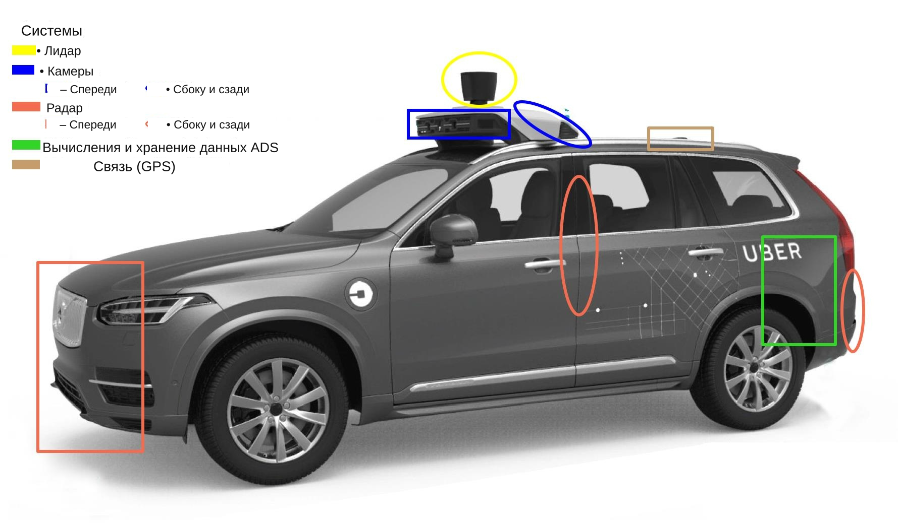
1.8.1 Потеря истории сопровождения при смене классификации
Несмотря на продолжение сопровождения обнаруженного объекта, ADS не затормозила в ответ на него, потому что её классификация постоянно менялась между автомобилем, велосипедом и прочим до
1.8.2 Подавление действий и потерянный тормозной путь
ADS включала интервал подавления действий, предназначенный для уменьшения реакций на ложные тревоги, пока система проверяла ситуацию и допускала вмешательство оператора (National Transportation Safety Board 2019 г.). Это программное решение напрямую израсходовало время, доступное для физической реакции: в момент
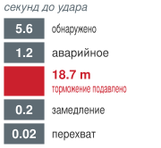
Распознавание пришло через секунды после обнаружения; затем подавление израсходовало 18.7 m с удержанным тормозом.
Первый член складского тормозного бюджета применяется напрямую. Усредняя две записанные скорости за 1 s подавления, получаем, что автомобиль проехал около 18.7 m, пока экстренное торможение было удержано, — расстояние, которое никакое последующее действие не могло вернуть. Скорость всё же падала в течение той секунды, потому что замедление для запланированного поворота направо на следующем перекрёстке уже шло; подавление удерживало именно экстренный отклик (National Transportation Safety Board 2019 г.). Сама чрезвычайная ситуация определялась выбранным пределом. ADS считала ситуацию чрезвычайной, когда для избежания столкновения требовалось замедление более 7 m/s² (0.71 g) или рывок6 сверх её предела, и ограничивала собственное автоматическое торможение этим замедлением. Полиция установила, что автомобиль мог замедляться в среднем на 0.92 g, то есть около 9.0 m/s², на этом дорожном покрытии (National Transportation Safety Board 2019 г.). Разница между выбранным разрешающим пределом и физическим — то различие, которое числа книги сохраняют на всём её протяжении. Вычисление не доходит до контрфактической остановки, потому что отчёт не устанавливает, когда другая конструкция начала бы тормозить. Обнаружение, корректное предсказание пути, распознавание опасности и физическое торможение — отдельные события; сообщение только времени первого обнаружения скрывает отказы между ними.
↪ Тормозная огибающая, начисляющая каждый интервал запаздывающего торможения против запаса дистанции, развивается в Раздел 12.3.
Практический случай 1.1: Отключённое резервирование безопасности (2018)
Context: 18 марта 2018 года экспериментальная ADS на Volvo XC90 2017 года сбила насмерть пешехода, пересекавшего дорогу в Темпе, штат Аризона (National Transportation Safety Board 2019 г.).
Mechanism: Как прослежено выше, изменения классификации отбрасывали историю сопровождения объекта, а секундное подавление удерживало торможение, пока планировалось лишь плавное замедление. Проект не использовал максимальное торможение только для смягчения неизбежного столкновения (National Transportation Safety Board 2019 г.).
Impact: Автомобиль сбил и смертельно травмировал пешехода. Поздний план плавного замедления не мог вернуть потерянную возможность остановиться.
Response: NTSB установила, что вероятной причиной стал отказ оператора транспортного средства следить за дорожной обстановкой и за ADS, поскольку она была отвлечена на свой мобильный телефон в течение всей поездки. Совет обнаружил три способствующих фактора в Uber ATG, все — следствие недостаточной культуры безопасности: неадекватные процедуры оценки рисков безопасности, неэффективный надзор за операторами транспортных средств и отсутствие достаточных механизмов противодействия самодовольству операторов по отношению к автоматизации. Внесли вклад также пересечение пешеходом дороги вне пешеходного перехода и недостаточный надзор Департамента транспорта Аризоны за испытаниями автоматизированных транспортных средств. NTSB дополнительно установила, что отключение штатных предупреждений о столкновении и автоматического экстренного торможения Volvo, которое Uber ATG выполнил из-за возможных радарных помех, устранило слой резервирования безопасности, и рекомендовала более сильное управление рисками безопасности при испытаниях автоматизированных автомобилей (National Transportation Safety Board 2019 г.).
Systems lesson: Неопределённость классификации, правило запаздывающего отклика и опора на невнимательного оператора могут сочетаться. Проект сделал оператора основной контрмерой при чрезвычайной ситуации, но ни один механизм не отслеживал её внимание в реальном времени: полномочия опирались на свидетельства, которые никто не собирал. Проекту нужны своевременная оценка опасности и отклик, способный смягчить последствия, когда избежать их уже невозможно; расследование не предписывает какую-либо конкретную аппаратную архитектуру.
Расследование поддерживает более широкое архитектурное требование. Экспериментальной ADS нужны резервирование безопасности и своевременный путь смягчения последствий даже при отказе восприятия или предсказания пути, и имитационные испытания Volvo, на которые ссылается NTSB, позволяют предположить, что заводское экстренное торможение могло предотвратить или смягчить это столкновение. Отчёт не устанавливает, когда отдельный разрешающий путь сработал бы и где он остановил бы автомобиль.7
Темпее иллюстрирует отказ до удара, где изменения классификации и программная задержка подавления помешали своевременному торможению. Инцидент 2023 года с роботакси Cruise отмечает противоположный полюс после удара. Автомобиль водителя, скрывшегося с места ДТП, бросил пешехода под колёса беспилотного автомобиля, который затормозил резко, но сбил её и остановился. Затем он начал отъезд к состоянию минимального риска8 и, поскольку его сенсорика не обнаружила человека под автомобилем, проехал около 20 ft (6.1 m) со скоростью до 7.7 mph, пока она была придавлена под ним. Это описание происходит из обзора, заказанного советами директоров компании, чьим предметом были раскрытия компании регуляторам (Quinn Emanuel Urquhart and Sullivan, LLP 2024 г.).
↪ Отъезд Cruise и правило отката, запрещающее возобновление движения, пока пространство под автомобилем не проверено, развиваются в Раздел 12.9.1.
Ни один из двух отказов не сводится к неточной модели. Первый израсходовал тормозной путь до начала торможения, и никакое последующее действие не могло его вернуть. Второй выбрал движение после удара без свежих свидетельств о пространстве, через которое двигался. Вместе они показывают, что должно соблюдаться до того, как машина действует, и что может делать откат, когда вред уже начался. Оба также пришлось впоследствии восстанавливать по записям о том, что машина воспринимала и когда, так что подотчётность, как и безопасность, зависит от пути, который разрешает движение.
↪ Кто ответил за столкновение Cruise и за решения, стоящие за совершённым действием, которое ни один посуточный журнал не фиксирует, — раскрывается в Раздел 17.1.
Контрольная точка 1.2: Криминалистика нарушений границ и полномочий
Проверьте, как механизмы инцидента в Темпе связаны с архитектурой:
1.9 Где встречаются безопасность, защищённость и подотчётность
И Темпе, и Cruise обернули внимание к тому, что машина знала в момент движения или незаторможенного останова, и в обоих случаях это пришлось восстанавливать задним числом по тем записям, которые она успела сделать. Те же три вопроса (достоверны ли доказательства, обосновывавшие движение, может ли что-то его отклонить и прослеживается ли решение) описывают и атаку, и аудит. В корпоративном программном обеспечении и распределённых системах безопасность, защищённость и подотчётность обычно живут в отдельных слоях. Защищённость обороняет сетевые границы криптографическими токенами, фреймворки надёжности смягчают отказы компонентов повторами и предохранителями (circuit breakers), а подотчётность записывает транзакции в базы с дополнением в конец. В physical AI все три сходятся на причинной границе — интерфейсе, где программные команды встречаются с физическими актуаторами. Рассмотрим движущуюся машину, пересекающую проход склада. Ей нужно валидное решение об остановке независимо от того, закрыты ли её фронтальные камеры грязью, подбросил ли злоумышленник подделанные пакеты на внутреннюю шину CAN (Controller Area Network) или визуально-языково-действенная политика сгаллюцинировала свободный путь. В каждом случае опасность кинетическая — столкновение со стеллажом или с работником. Поскольку импульс нельзя откатить, как неудавшуюся транзакцию базы данных, контроль допуска не может просто подтвердить, кто отправил команду. Он должен определить, нарушит ли исполнение этой команды в данный момент физические пределы машины.
Обычное изменение среды бросает вызов этой границе так же прямо, как и атака. Достоверное замедление движущейся машины 2 m/s² опирается на предпосылку, заявленную на её карточке: пол обеспечивает коэффициент трения не менее 0.204. Когда пол не даёт трения, которое запрашивают тормоза, замедление ограничивает не тормозная система, а сцепление, и тормозной путь растёт обратно пропорционально доступному трению. Плёнка пролитой гидравлической жидкости может снизить трение «шина–пол» с примерно
Угрозы защищённости атакуют ту же систему допуска, подменяя доказательства, на основе которых разрешается движение. Злоумышленнику не нужно взламывать криптографические ключи или менять веса модели, чтобы расстроить физического агента; достаточно исказить сенсорные входы, питающие решения о допуске. Проецирование структурированных световых узоров на объективы камер, подмена маяков локализации ультраширокополосной связи (UWB) или инъекция посторонних пакетов в сенсорные шины могут обмануть контроллер и заставить его одобрить разрушительные команды — даже пока нейронная сеть исполняет свой конвейер инференса без численного сбоя. Изоляция предлагающего компонента от пути допуска мало помогает, если обе подсистемы потребляют одну и ту же искажённую телеметрию. Поэтому защита причинной границы требует валидации самих доказательств. Такая валидация состоит в перекрёстной проверке разнородных сенсорных потоков (например, сверке визуальной одометрии по камерам с колёсными энкодерами и инерциальными датчиками), в криптографической аутентификации сообщений на приёмопередатчиках шин и в поддержании отказобезопасных проверок правдоподобия, отвергающих показания датчиков, отклоняющиеся от физических законов сохранения.
↪ Корректно сформированный пакет, несущий ложное измерение, становится испытанием отказом в кампании инъекций, развёрнутой в Раздел 15.6.3.
В цифровых системах криптографический токен полномочий или запись в списке контроля доступа дают право изменять файл независимо от загрузки процессора или внешних условий. В physical AI физическая полномочность зависит от состояния. Криптографические учётные данные устанавливают личность и организационное право запросить действие, но физическая допустимость целиком зависит от мгновенного рабочего состояния машины и её рабочего пространства. Команда скорости сустава 2 rad/s может быть рутинным перемещением, когда промышленный манипулятор действует в открытом свободном пространстве, но та же самая команда становится неприемлемой, если рука находится в 2 mm от механического жёсткого упора или от человека-коллеги. Оценка физических полномочий требует проверки предлагаемого действия против мгновенной кинематики, инерции полезной нагрузки, теплового запаса двигателей и неопределённости оценки состояния. Контроль допуска также должен оставаться связанным с исполнимым запасным действием. Если шлюз допуска отклоняет предложенную команду из-за приближения машины к операционной границе, контроллер должен немедленно отправить динамически осуществимый аварийный манёвр — например, управляемое рекуперативное торможение или податливый удерживающий режим, уступающий при контакте. Манёвр останавливает или перенаправляет объект, не превышая пределов механических нагрузок.
Подотчётность требует журнала аудита, восстанавливающего причинную цепочку от сенсорных доказательств к физическим исходам. Когда воплощённая машина становится причиной столкновения или опасного сближения, разбор инцидента требует достаточно малой неопределённости меток времени и преобразования часов, чтобы различить относящиеся к делу события восприятия, допуска, отправки и физического отклика в нескольких потоках данных. Эти потоки включают сырые наблюдения, потреблённые планировщиком, и действие, предложенное обученной политикой. Также они включают оценки состояния и динамические ограничения, проверенные шлюзом допуска, отфильтрованную команду, отправленную на приводы двигателей, и измеренный отклик от энкодеров суставов и датчиков силы и момента. Журналы команд фиксируют намеченную траекторию, а сенсорная телеметрия измеряет фактический механический отклик объекта. Запись одних лишь отправленных уставок не подтверждает, что актуатор их исполнил: обрыв цепи, сработавший тепловой предохранитель или заклинивание механической коробки передач мгновенно вызовут расхождение физического объекта с заданным поведением. Оба потока должны записываться относительно синхронизированных аппаратных часов (например, протокола точного времени IEEE 1588), чтобы следователи могли различить сбой планирования, ошибку шлюза допуска и отказ электромеханического актуатора. Реконструкция необходима, но сама по себе не отвечает на вопрос, кто отвечает за действие. Решения, задающие огибающую машины, её штат и разрешение на работу, принимаются до любого такта, и их надо фиксировать намеренно (Раздел 17.2).
↪ Протокол: обмен IEEE 1588 (Precision Time Protocol), выравнивающий эти часы, разбирается в Синхронизация часов и сетевые метки времени.
Безопасность, защищённость и подотчётность в итоге сходятся к трём единым требованиям на пути допуска, охраняющем причинную границу:
- Свежее, аутентифицированное физическое состояние: шлюз допуска должен работать на телеметрии, достаточно свежей, чтобы ограничить физическую неопределённость, и достаточно устойчивой к подделке и деградации, чтобы оправдать допуск действия.
- Детерминированные полномочия на вмешательство: механизм допуска должен обладать нескомпрометированными физическими полномочиями вето или ограничения неосуществимых предложений и внедрения безопасных аварийных манёвров — независимо от внутренней уверенности или идентичности обученной модели.
- Синхронизированная причинная телеметрия: система должна вести неизменяемую запись того, что было предложено, какое состояние проверено, какие команды отправлены и как отреагировала машина.
Приведённые инциденты отображаются на эти требования. Предсказатель Темпе отбросил уже имевшиеся доказательства, а штатное экстренное торможение, способное вмешаться независимо, было отключено; Cruise двигался без свежих данных о пространстве под собой. Оба расследования затем зависели от третьего требования — записанной телеметрии, по которой события были восстановлены. Стало быть, путь допуска — это то место, где исполняются обязательства физической машины по безопасности, защищённости и подотчётности, а привязка вероятностных предложений к проверкам физических пределов — это то, что позволяет обученным возможностям действовать в обоснованных границах. Чему должны подчиняться эти проверки и почему — предмет четырёх законов.
↪ Операционный журнал, переживший физический отказ и позволяющий следователю восстановить каждое допущенное действие, разрабатывается в Раздел 14.7.
1.10 Четыре краеугольных закона
Каждая проверка на пути допуска подчинена ограничениям, которые не может выторговать ни обученная политика, ни программный супервизор. Тормозит ли складская машина перед коллегой в проходе, нажимает ли на дверь клетки с пружинной защёлкой или несёт неучтённую полезную нагрузку — она обязана уважать механические пределы своего объекта, адаптироваться к динамическим средам, изменённым её собственным движением, и арбитражировать между спекулятивными выходами модели и физически безопасным управлением. Четыре краеугольных закона организуют эти инженерные обязанности, каждый из которых служит фундаментом крупной части этой книги:
- Первый закон: необратимость. Программное обеспечение не может откатить физические последствия. В чисто цифровых системах ошибочную транзакцию можно прервать и восстановить состояние из контрольной точки. В физическом пространстве, однако, работа, произведённая над объектом, термодинамична и необратима. Команду двигателю, столкнувшуюся с оснасткой, порвавшую кабель или расколовшую хрупкую нагрузку, отозвать нельзя. Поэтому каждая проверка допустимости должна завершаться до того, как машина израсходует оставшийся запас зазора. Как показывает бюджет тормозного пути, задержка обработки напрямую расходует физический зазор, вынуждая механические актуаторы тормозить на всё сокращающемся расстоянии. Обратная подача напряжения может со временем вернуть руку в исходные координаты, но не залечит треснувший конструкционный материал и не вернёт энергию, потерянную на трение и тепло. Часть I переводит эту физическую реальность в кинетические бюджеты для корпуса робота и детерминированные ограничения тайминга для его низкоуровневых контроллеров.
- Второй закон: эндогенные данные. В классическом офлайн-обучении выборки извлекаются независимо из стационарного распределения. В воплощённых системах генерация данных эндогенна: каждое управляющее действие изменяет физическое состояние и определяет, что датчики увидят следующими. Если рука при подходе толкает объект, он смещается; если мобильное основание уходит с номинальной траектории, последующие визуальные кадры отклоняются от обучающих демонстраций. Точность одношагового предсказания на офлайн-бенчмарке не может гарантировать поведение в замкнутом контуре, потому что малые ошибки исполнения накапливаются на горизонте задачи — это ковариативный сдвиг, встречаемый в замкнутом причинном контуре (раздел 1.4.1). Часть II представляет сбор данных, обучение модели и оценку политики как цикл непрерывного улучшения: диагностировать поведенческие сбои, целенаправленно собирать корректирующие демонстрации, переобучать политик-кандидатов и систематически оценивать как прирост качества, так и непреднамеренные регрессии. Эмпирические доказательства прошлых выкатываний ограничивают утверждения о текущей возможности; расширить эту огибающую способен только квалифицированный новый опыт.
- Третий закон: предложение не есть разрешение. Обученная модель действует лишь как предлагающий компонент, но никогда — как ничем не ограниченный исполнитель. Архитектурно независимый путь допуска (например, фильтр безопасности времени исполнения или монитор гарантий) должен арбитражировать каждую предложенную управляющую команду до того, как она достигнет аппаратных актуаторов. Выдача разрешения требует трёх предпосылок: свежих оценок состояния от верифицированных датчиков, явной проверки, что команда уважает каждый физический предохранительный огибающий, и немедленно исполнимого запасного манёвра, если предложение задержано, отсутствует или небезопасно. Это разделение полномочий должно оставаться устойчивым к системным отказам: убежавший или зависший поток модели ни при каких условиях не должен задерживать, лишать ресурсов или искажать детерминированную логику безопасности, охраняющую объект. Часть III выстраивает среду исполнения реального времени вокруг этого разделения между спекулятивным предложением и независимым, ограниченным допуском.
- Четвёртый закон: разрешение нужно заслужить. Воплощённая машина заслуживает разрешения на работу ровно настолько, насколько эмпирические доказательства подтверждают её производительность при заявленных условиях. Безупречное исполнение на горстке лабораторных испытаний не оправдывает автономию при разнообразном трении поверхностей, переменных нагрузках, ухудшенном освещении или деградации датчиков. Каждый развёртывание-кейс безопасности должен явно очерчивать операционный домен проекта (ODD),9 формулировать средовые допущения, лежащие в основе этих границ, и задавать отказобезопасные политики деградации на случай, когда условия времени исполнения выходят за проверенные пределы. Столкновение в Темпе 2018 года показало цену игнорирования этой границы. Архитектура системы полагалась на оператора безопасности в салоне как на основную аварийную контрмеру, но не имела никакого механизма контроля, смотрит ли оператор вообще на дорогу (National Transportation Safety Board 2019 г.). Часть IV формализует полномочия команд, испытания инъекциями отказов и критерии выпуска, чтобы эпистемическая и физическая неопределённость ограничивали то, что машине разрешено делать.
Из этих четырёх только первая является физическим законом. Необратимость следует из ньютоновской механики и термодинамики. Работа, совершаемая над объектом управления, передаёт энергию и повышает энтропию, и никакая программная архитектура не может обратить этот переход вспять. Оставшиеся три — инженерные принципы проектирования, выкристаллизовавшиеся за десятилетия системной инженерии, промышленной робототехники и аварий в аэрокосмической отрасли. Команда могла бы построить архитектуру, нарушающую их, — например, передавая невалидированные сетевые выходы напрямую на усилители двигателей, — но она понесла бы серьёзные и предсказуемые риски. Книга возводит все четыре в фундаментальные законы, поскольку рассматривает их как обязательные ограничения для любой промышленной воплощённой системы.
Ни один из этих трёх архитектурных принципов не является совершенно новым. Каждый имеет богатую основу в компьютерных системах, теории управления и инженерии безопасности. Таблица 3 сопоставляет терминологию этой книги с устоявшейся литературой, а также каноническими источниками и документированными реальными инцидентами, которые обобщает каждый принцип, включая инциденты в Темпе и Cruise. Там, где термины книги вводят более строгую операционную точность, — например, когда свежесть состояния привязывается напрямую к динамическому бюджету остановки, — книга сохраняет специализированную системную формулировку. При поиске в более широкой инженерной литературе классические термины служат стандартным индексом.
| Закон или термин книги | Тип | Устоявшееся название в отрасли | Канонический источник | Документированная авария, которую он обобщает |
|---|---|---|---|---|
| Первый закон: необратимость (причинная граница) | Физический | Необратимая работа над объектом управления; бюджет остановки «реакция плюс торможение» | Механика; Раздел 2.3 | Темпе (2018): подавление действия на одну секунду позволило автомобилю проехать около 18.7 m при задержанном аварийном торможении (National Transportation Safety Board 2019 г.) |
| Второй закон: эндогенные данные | Принцип проектирования | Ковариационный сдвиг; накопление ошибки в имитационном обучении | Росс, Гордон и Багнелл (Ross и др. 2011 г.) | Результат обучения, а не авария: ошибки клонированной политики могут накапливаться с ростом горизонта задачи (Раздел 5.2) |
| Третий закон: предложение — не разрешение (граница предложений, путь разрешений) | Принцип проектирования | Гарантия времени исполнения (runtime assurance) и её архитектура Simplex; фильтр безопасности | Ша (Sha 2001 г.); Хсу, Ху и Фисак (Hsu и др. 2024 г.) | Therac-25: программное обеспечение взяло на себя защиту, которую обеспечивали аппаратные блокировки (Leveson и Turner 1993 г.); Mars Pathfinder (1997): из-за инверсии приоритетов низкоприоритетная работа задерживала критичную по срокам задачу шины, пока проверка завершения планировщика не перезапустила компьютер (Reeves 1997 г.) |
| Свежие свидетельства (вход каждой проверки разрешений) | Принцип проектирования | Возраст информации (age of information) | Каул, Йейтс и Грутесер (Kaul и др. 2012 г.) | Хотя это не чистый отказ из-за устаревания, Темпе (2018) демонстрирует соседнюю опасность — отброшенные свидетельства: каждая переклассификация объекта сбрасывала исторические треки, вынуждая предсказание пути вычислять траектории на усечённой истории датчиков (National Transportation Safety Board 2019 г.) |
| Четвёртый закон: разрешение нужно заслужить | Принцип проектирования | Обоснование соответствия (assurance case); область эксплуатационного проектирования (ODD) | UL 4600 (UL Standards & Engagement 2023 г.) | Темпе (2018): конструкция сделала оператора основным контрмерным средством в аварийной ситуации, но ничто не отслеживало её внимание в реальном времени (National Transportation Safety Board 2019 г.); Cruise (2023): манёвр остановки после столкновения перемещал автомобиль без свидетельств того, что пространство под ним свободно, поскольку его система обнаружения не идентифицировала там пешехода (Quinn Emanuel Urquhart and Sullivan, LLP 2024 г.) |
Граница предложений — это то место, где все четыре закона сходятся в одной архитектуре. Необратимость требует, чтобы каждая проверка завершалась до того, как команда изменит объект управления, а эндогенные данные не позволяют офлайн-метрикам обучения сертифицировать предлагающий компонент в замкнутом контуре. По этим причинам третий закон (предложение — не разрешение) помещает эту проверку на независимый путь разрешений, который модель не может задержать или исказить. Четвёртый закон (разрешение нужно заслужить) затем ограничивает допущенные предложения теми условиями эксплуатации, которые подтверждены эмпирическими свидетельствами. Наращивание ёмкости модели не ослабляет эти ограничения; напротив, оно усиливает физическое давление на систему. Хотя общие методы машинного обучения дают превосходную производительность по мере роста вычислений (Sutton 2019 г.), движущаяся машина должна обеспечивать свои бортовые вычисления в пределах конечного электрического и теплового бюджета. Каждый дополнительный нейронный слой, голова внимания или шаг диффузии расходует фиксированные физические лимиты пропускной способности памяти, электроэнергии и рассеивания тепла. Задержка инференса на пути остановки — это путь, который торможение не может вернуть. На движущейся машине на пределе движения каждый миллисекунда стоит 1.5 mm зазора, как показал блокнот об остановке. Этот вычислительный, тепловой и временной потолок образует физическую стену, с которой сталкивается каждый обученный предлагающий компонент.
↪ Узкие места по пропускной способности памяти и задержке, с которыми сталкиваются бортовые обученные предлагающие компоненты, раскрываются в Раздел 3.4.
Наконец, отклонение недопустимой команды должно иметь явную физическую реализацию. В традиционном программном обеспечении необработанное исключение или проваленная проверка могут просто завершить поток. На движущемся роботе остановка программного процесса не устраняет физический импульс. Отказ имеет смысл только если среда исполнения немедленно отправляет допустимый резервный вариант (динамический тормозной манёвр, податливую остановку или управляемый останов), который физическое тело может безопасно выполнить в пределах оставшегося зазора остановки. Перевод четырёх законов и их механизмов времени исполнения в инженерную систему занимает четыре части этой книги, каждая из которых создаёт записи, на которые опираются последующие части.
1.11 Архитектура этой книги
Перемещение обученного предложения, такого как траектория движущейся машины для открытия двери складской клетки, от абстрактного требования задачи к безопасной, обоснованной физической операции требует дисциплинированной четырёхэтапной прогрессии. Инженер должен сначала ограничить то, что аппаратный объект управления может физически достичь, и охарактеризовать то, что обученный предлагающий компонент продемонстрировал под строгим тестированием. Затем инженер должен построить изолированный монитор времени исполнения для перехвата живых предложений и установить операционные условия, при которых продолжение выполнения остаётся обоснованным. Каждый этап соответствует одному из четырёх законов. Система записей, проиллюстрированная в рисунок 9, формализует эту прогрессию, фиксируя эксплуатационные допущения и эмпирические свидетельства так, чтобы последующие решения времени исполнения могли их проверять и на них полагаться. Концептуально эти записи прослеживают две сходящиеся конвейера. Одна нить устанавливает офлайн-физические лимиты и проверенную компетентность; вторая обрабатывает онлайн-наблюдения датчиков и кандидатные действия в реальном времени. Оба конвейера сходятся в решении о разрешении, где система допускает или отклоняет предложенную траекторию. В Раздел 18.1 эта архитектура синтезирует обе нити, чтобы решить центральную задачу книги — инженерию надёжных, высокопроизводительных физических систем из непроверенных обученных моделей и неумолимого механического оборудования.
Запись — это машиночитаемый артефакт, который последующие решения по безопасности и времени исполнения могут верифицировать и доверять ему. Первоначальный расчёт остановки (блокнот 1.1) уже набрасывает первую запись в цепочке: запись лимита с шестью элементами, которые вводит руководство читателя (номинальное значение, условия эксплуатации, неопределённость, запас, детектор времени исполнения и происхождение). Его номинальное значение — это выведенная дистанция остановки при заявленных условиях эксплуатации загруженной массы груза, сухого бетона, неподвижного препятствия и постоянной скорости приближения. Поскольку эти входы — иллюстративные скаляры, а не калиброванные распределения, однако, его неопределённость остаётся неквантифицированной. Видимый буфер между препятствием и машиной, следовательно, есть лишь арифметическая разность предварительных величин, а не верифицированный запас безопасности. Расчёт также лишён детектора времени исполнения (никакой датчик ещё не отслеживает, не падает ли сцепление пола или не смещается ли груз вне предполагаемого огибающего, Раздел 2.7.3), и его происхождение опирается на базовые допущения, а не на калиброванные журналы оборудования. Необоснованный расчёт становится операционным инженерным свидетельством только тогда, когда все шесть полей заполнены и подкреплены эмпирическими данными. Каждый пронумерованный бокс в четырёх частях полос в рисунок 9 устанавливает машиночитаемую запись такой строгости для отдельного архитектурного решения.
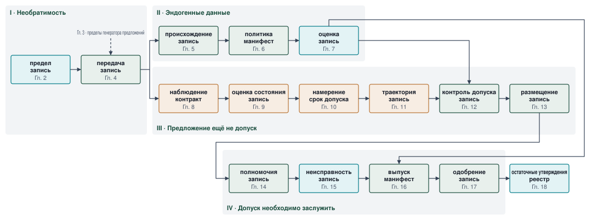
Часть I, «Анатомия машины», переводит физическую необратимость в жёсткие архитектурные лимиты. Глава 2 профилирует механический объект управления, чтобы квантифицировать его физические бюджеты (свежесть измерений, дистанция остановки, развиваемый крутящий момент, нагрев обмоток и напряжение питания). Глава 3 измеряет пропускную способность и задержку инференса обученного предлагающего компонента, чтобы определить, что он может выполнить до истечения сроков. Глава 4 связывает вычисления с актуаторами через детерминированные шины, структурируя путь разрешений, чьи гарантии тайминга вытекают из требований остановки объекта управления. Вместе запись лимита и запись передачи делают каждое физическое и временное допущение явным. Часть II, «Обучение машины», сталкивается с реальностью того, что физические действия непрерывно изменяют будущие наблюдения датчиков. Глава 5, Глава 6 и Глава 7 строят свидетельственную цепочку, необходимую для сбора демонстраций, обучения управляющих политик и ограничения производительности политики заявленной областью эксплуатационного проектирования. По этому конвейеру запись происхождения, манифест политики и запись оценки документируют как эмпирическую компетентность, продемонстрированную моделью, так и операционные границы, где её статистические гарантии ломаются.
Часть III, «Запуск машины», принуждает во время исполнения разделение между предложением действия и разрешением его выполнить. От Глава 8 до Глава 13 главы прослеживают кандидатные команды через онлайн-среду исполнения. Они квалифицируют измерения датчиков в контрактах наблюдения и поддерживают оценки состояния в записи убеждения. Они ограничивают цель ареной намерения (ограниченной по времени выдачей цели, но не пути, отличной от арены чанка, ограничивающей один сегмент движения). Они проверяют кандидатные траектории против физических ограничений реального времени до допуска и отправки, затем проверяют, сохраняет ли оборудование путь разрешений независимым. Часть IV, «Управление машиной», принуждает принцип, что разрешение нужно заслужить. Глава 14, Глава 15 и Глава 16 управляют тем, как полномочия передаются между машиной и оператором-человеком, как внедрение отказов проверяет, держатся ли защитные реакции, и как решения о развёртывании собираются в манифесты выпуска. Глава 17 затем называет того, кто отвечает за каждое решение за допущенным действием. Она также проверяет, является ли каждая человеческая роль, на которую опирается конструкция, выполнимой для человека, и считает людей, которые несут риск машины и фигурируют в её записях. Наконец, Глава 18 применяет каркас к незнакомой машине, синтезируя то, что инженерная команда может построить и формально обосновать, и одновременно выявляя остаточные риски, требующие дальнейшего смягчения. По этим частям складской мобильный манипулятор, представленный здесь, предоставляет единственную конкретную машину, на которой заземляется каждое архитектурное решение. Его записи делают проектные допущения полностью инспектируемыми, хотя инженер должен помнить, что составление записи документирует явное утверждение, а не гарантирует его физическую истинность. Регистр системных записей в Реестр записей каталогизирует все шестнадцать записей, отмечая их производящие главы и конкретные инварианты, которые они связывают, а карточка машины в раздел 1.4.2 задаёт основополагающие физические параметры самого робота. Вместе этот четырёхэтапный маршрут образует воспроизводимую дисциплину для того, чтобы сделать обученное поведение надёжным в физическом пространстве, защищая от распространённых заблуждений, возникающих при переносе цифровых допущений через причинную границу.
1.12 Заблуждения и ловушки
Заблуждения, приведённые далее, возникают, когда допущения из чистой программной инженерии, статистического обучения или классической теории управления переносятся в воплощённые машины. В цифровых системах ошибочное состояние обычно можно перехватить, откатить или перезапустить. Через причинную границу, однако, программные выходы становятся физическими силами, необратимо изменяющими мир. Предотвращение физического вреда требует жёстких детерминированных гарантий, которые цели обучения, операторы-люди и асинхронные процедуры восстановления не могут обеспечить сами по себе.
Заблуждение: Ограничения безопасности можно обучить в политику.
Инженерные команды часто пытаются принудить физическую безопасность, добавляя штрафные члены, барьерные штрафы или отрицательные награды к цели обучения. Хотя формирование штрафов подавляет нежелательные действия на распределении обучения, оно не даёт математической гарантии на действия, выдаваемые при развёртывании. Глубокие нейронные сети остаются некалиброванными аппроксиматорами функций при воздействии входов вне распределения, деградации датчиков или новых динамик среды. Статистическая функция потерь оптимизирует ожидаемую производительность, но безопасность требует жёстких инвариантов, которые держатся на каждом цикле управления. По этой причине детерминированное принуждение безопасности должно располагаться ниже по потоку политики, действуя как независимый путь разрешений, фильтрующий предложенные команды до того, как они достигнут регистров драйверов актуаторов, — именно там, где третий закон помещает граничный шлюз.
Ловушка: Считать вмешательство человеческого надзора мгновенным в системах разделяемой автономии.
В проектах разделяемой автономии, таких как роботизированный хирургический инструмент, предоставляющий гаптическое ведение на основе обученной анатомической модели, проектировщики иногда трактуют оператора-человека как универсальный предохранитель. Это допущение игнорирует физиологические пределы времени человеческой реакции, которое составляет от 150 мс до 250 мс для простых тактильных или визуальных рефлексов и растёт под когнитивной нагрузкой. Однажды добавленные видео с консоли и рукопожатие, движущаяся машина карточным бюджетом закладывает перехват в контуре на 605 ms. За этот интервал актуатор, работающий на управляющем контуре 1 кГц, может исполнить сотни непроверенных циклов, генерируя достаточно силы, чтобы порвать мягкие ткани или повредить механическую заготовку до того, как оператор вмешается. Делегирование полномочий оператору-человеку не устраняет способность машины к вреду во время задержки надзора. Путь разрешений должен автономно принуждать локальные огибающие силы, скорости и перемещения, сохраняя установленные физические огибающие при их условиях эксплуатации, не полагаясь на своевременные человеческие переопределения.
Ловушка: предположение, что программная задержка лишь мягко ухудшает производительность.
В чисто цифровых системах задержка инференса или джиттер планировщика лишь увеличивает время отклика или снижает качество обслуживания. В физических системах соблюдение временных характеристик является требованием функциональной корректности. Если обученная политика зависает — из-за конкуренции за ядра ускорителя, пауз на выделение памяти или задержек сетевой сериализации, — то сохранение её прежней команды на последующих циклах управления превращает устаревшее намерение в физическую опасность. Например, мобильный манипулятор, повторяющий свою последнюю команду прямой скорости во время 100 ms сбоя инференса, может столкнуться с неотображённым препятствием. Поэтому команды актуации должны нести ограниченную временную валидность, контролируемую аппаратными или программными сторожевыми таймерами реального времени. Когда окно валидности (срок действия разрешения чанка из бюджета остановки) истекает без подтверждённого обновления, низкоуровневый контроллер должен начать резервное действие в пределах своего установленного бюджета отклика. Выбранная остановка или удержание должны оставаться выполнимыми для текущего механизма, состояния и сохранившихся ресурсов.
Заблуждение: предположение, что физическую актуацию можно обратить вспять последующей программной компенсацией.
Транзакционные программные архитектуры опираются на откаты и процедуры компенсации, чтобы отменить ошибочные операции. В воплощённых системах термодинамика и материаловедение разрушают эту эквивалентность. Если роботизированная рука прикладывает чрезмерный момент к заготовке, обратная моторная команда не может распрямить пластически деформированный металл, починить треснувший композит или вернуть электрическую энергию, рассеянную в виде тепла в обмотках двигателя (
1.13 Итоги
Physical AI сводит воедино две исторически различные инженерные дисциплины: классическую робототехнику и современное машинное обучение. По мере того как обученные модели всё ближе подходят к прямому управлению актуаторами, граница между цифровыми вычислениями и физической реальностью обостряется на причинной границе — интерфейсе, где допущенная команда становится необратимым физическим эффектом. В чисто программных системах откаты состояния и повторные попытки позволяют восстановиться после алгоритмических сбоев; в физическом мире ПО не может отменить кинетическую энергию, импульс или удар. Безопасное восстановление требует исполнимого, физически осуществимого контрмерного действия.
Физическая динамика также не приостанавливается, пока нейронные сети считают. Поскольку машина продолжает движение во время задержек сенсорики и обработки, безопасность требует детерминированных проверок допуска выше по потоку от любой значимой актуации. Как показывает бюджет остановки складского мобильного манипулятора и столкновение в Темпе, качество предсказания не даёт никакой защиты, когда задержка отклика уже израсходовала зазор. Архитектура разрешает это противоречие, разделяя предложение и разрешение и наделяя независимый путь разрешения с ограниченной задержкой правом отказа. Четыре закона — один физический и три принципа проектирования — организуют каркас, который развивается в остальной части книги, при этом элементарный бюджет остановки и его кроссоверная скорость образуют количественное ядро этой главы (таблица 4).
| Уравнение | Что оно ограничивает или решает | Выведено |
|---|---|---|
| Может ли движущаяся машина остановиться в пределах наблюдаемого зазора: путь, пройденный за задержку отклика, плюс тормозной путь, до надбавок, вводимых в последующих главах | уравнение 1 | |
| Кроссоверная скорость, при которой путь за время задержки равен тормозному пути; ниже |
Из уравнение 1, раздел 1.4.3 |
Основные выводы: Инженерия через причинную границу
- Полезное поведение требует интегрированной машины: Physical AI объединяет обученное принятие решений, физическую динамику и делегированную механическую власть. Доставка надёжной автономной работы требует совместного проектирования компетентности в задачах с пределами физического тела, средами исполнения вычислений реального времени и операционными свидетельствами, поддерживающими развёртывание.
- Задержка отклика потребляет физический запас: элементарный бюджет остановки
разделяет тормозной путь на перемещение из-за задержки и механическое торможение. Ниже кроссоверной скорости доминирует задержка отклика; выше доминирует тормозное замедление. Для складского мобильного манипулятора на пределе привода перемещение до торможения добавляет 35.6 percent к тормозному пути. Решающая задержка принадлежит тому пути, который запускает защитный отклик, — он может работать независимо от времени инференса обученного предлагателя. - Предложение и разрешение выполняют различные архитектурные роли: обученный предлагатель (Мозг) генерирует целенаправленные действия, тогда как независимый путь разрешения допускает, изменяет или отклоняет их до пересечения причинной границы. Обеспечение безопасности опирается на валидированные данные датчиков, физические кинематические огибающие, строгие дедлайны реального времени и верифицируемые резервные манёвры.
- Свидетельства управляют безопасной работой и систематическим совершенствованием: эту книгу структурируют четыре закона. Необратимость — физический закон; остальные три (эндогенные данные, предложение — не разрешение, разрешение должно быть заслужено) — принципы проектирования, переводящие ковариантный сдвиг, гарантию времени исполнения и ассуранс-кейс в системную практику. Вместе они связывают физическое аппаратное обеспечение, воплощённое обучение, исполнение в реальном времени и операционное управление, устанавливая верифицированный сервис в определённых операционных огибающих и указывая целенаправленные оценки, необходимые для их расширения.
Прежде чем судить, правильно ли предлагаемое действие, инженер должен установить, какой физический отклик остался бы, если бы предложение оказалось неверным, устаревшим или вовсе не пришло, и располагает ли машина по-прежнему зазором, временем и полномочиями выполнить этот отклик. Проект, который не может ответить исходя из собственных измеренных пределов, передал безопасность качеству предсказания, а бюджет остановки показал, что качество предсказания не может выкупить зазор обратно, когда задержка его уже израсходовала. Поэтому ответ начинается с того, что установка может сделать при заявленных условиях, — никогда с того, во что верит модель.
1.14 Историческая перспектива и дополнительное чтение
В физическом ИИ перенос обученных моделей непосредственно в контур актуации создаёт серьёзные временные риски и риски безопасности. Инженерные принципы, разрешающие эти трудности, берут начало во встраиваемых системах, управлении в реальном времени и инженерии безопасности. Вычисления общего назначения трактуют время исполнения как лишь оптимизацию производительности, полагая, что корректность зависит исключительно от логических связей вход-выход. Теория киберфизических систем опрокинула это допущение, утверждая, что физическая динамика и вычислительные процессы должны моделироваться совместно, потому что команда, отправленная не вовремя, физически некорректна (Lee 2008 г.). Это понимание образует фундамент причинной границы. Аналогично, разделение предложения команды и разрешения на исполнение восходит к архитектурам гарантии времени исполнения (runtime assurance). Архитектура Simplex показала, что промышленная система управления может безопасно исполнять неверифицированный высокопроизводительный контроллер, если он дополнен сертифицированным базовым контроллером и детерминированной логикой переключения, способной вернуть установку под контроль до нарушения границ безопасности (Seto и др. 1998 г.; Sha 2001 г.). Современные фильтры безопасности в воплощённом машинном обучении обобщают этот дизайн, валидируя предложения нейронных сетей против математических сертификатов безопасных состояний (управляющие барьерные функции или огибающие достижимости, которые развивает Глава 12) до выдачи разрешения на актуацию (Hsu и др. 2024 г.).
Многие основополагающие принципы безопасности в физических системах возникли из криминалистических расследований катастрофических отказов. Трагедии лучевой терапии Therac-25 продемонстрировали смертельную опасность замены механических блокировок программными процедурами (Leveson и Turner 1993 г.). Когда состояния гонки обходили программные проверки, машина вводила смертельные передозировки облучения, доказав, что надёжность ПО не подразумевает безопасность системы. Системно-теоретическая безопасность впоследствии переосмыслила аварии не как изолированные отказы компонентов, а как неспособность общей структуры управления обеспечить ограничения безопасности во взаимодействиях компонентов, контуров обратной связи и операторов (Leveson 2011 г.). Этот сдвиг напрямую привёл к ассуранс-кейсу — структурированной аргументации, демонстрирующей, что конкретные свидетельства удовлетворяют заявленным требованиям безопасности в явно заданных операционных средах (Kelly 1998 г.). Стандарт UL 4600 принял эту структуру в качестве центрального каркаса для автономных продуктов (UL Standards & Engagement 2023 г.), отказавшись от произвольного километража дорожных испытаний в пользу верифицируемых аргументов на основе утверждений. Публичные записи о происшествиях, в частности расследование Национального совета по безопасности на транспорте столкновения автономного автомобиля в Темпе 2018 года (National Transportation Safety Board 2019 г.), остаются наиболее полной документацией в этой области о том, как аргументы безопасности распадаются, когда взаимодействуют изменение классификации, задержка отклика, выбранная в ПО, и надежда на человеческий резерв.
- Киберфизические системы (Lee 2008 г.). Ли разъясняет, почему классические вычислительные абстракции терпят неудачу при взаимодействии вычислений с физическими процессами. Архитектуры компьютеров общего назначения намеренно абстрагируются от времени, трактуя скорость исполнения как соображение производительности, а не спецификацию корректности. Ли показывает, что для физических взаимодействий момент отправки команды актуации неотделим от её физического смысла, — это даёт концептуальный фундамент для трактовки причинной границы как явного системного интерфейса.
- Гарантия времени исполнения (Sha 2001 г.). Статья Ши об архитектуре Simplex — то место, где видно, как логика переключения решает, когда вернуть установку под контроль от неверифицированного контроллера, и почему эта логика должна быть проще того, чем она управляет. Это паттерн, лежащий в основе разделения предложения и разрешения в этой книге.
- Therac-25 (Leveson и Turner 1993 г.). Криминалистический анализ Левесон и Тёрнера прослеживает конкретные состояния гонки и практики разработки и отчётности, позволившие передозировкам повторяться, — детали, опущенные в приведённом выше резюме. Он остаётся ключевым учебным случаем того, почему защитные функции нуждаются в обосновании, независимом от контролируемого ими ПО.
- Системно-теоретическая безопасность (Leveson 2011 г.). Левесон вводит модель аварий STAMP, переосмысляя безопасность как непрерывную задачу управления, а не совокупность вероятностей отказов компонентов. Аварии происходят, когда структура управления не обеспечивает ограничения безопасности во взаимодействиях компонентов, задержках датчиков и контурах обратной связи. Этот текст даёт теоретическую основу для enforcing-а инвариантов безопасности как динамических ограничений времени исполнения, а не статических проектных допущений.
- Расследование в Темпе (National Transportation Safety Board 2019 г.). Отчёт Национального совета по безопасности на транспорте о смертельном столкновении автономного автомобиля в Темпе в 2018 году предлагает наиболее полный эмпирический материал по отказу безопасности воплощённого ИИ. Отчёт детализирует, как в столкновении соединились изменения классификации, отбросившие историю трекинга; секундное подавление действий, призванное ограничить срабатывания по ложным тревогам; отдельное отключение заводского аварийного торможения автомобиля из-за возможных помех радара; и надежда на оператора, чьё внимание ничто не контролировало. Хронология событий и телеметрия датчиков — жизненно важное чтение для любого, кто строит контуры восприятие-действие в реальном времени.
Дальнейшие шаги: От причинной границы к физическим пределам
Решению о разрешении нужен физический предел, относительно которого можно оценить предлагаемое действие. Глава 2 открывает Часть I пятью бюджетами, которые путь разрешения должен проверить до выдачи момента (свежесть измерений, тормозной путь, достижимый момент, нагрев обмоток и напряжение питания) и спрашивает, какой из них связывает первым для данного манёвра, при каком напряжении условий и на каких свидетельствах. Каждый бюджет завершается предельной записью — шестикомпонентной формой, которую эта глава набросала из своего расчёта остановки. Глава 3 затем рассматривает возможности и тайминги обученного предлагателя, а Глава 4 использует оба набора ограничений для проектирования передачи и независимого пути разрешения. Последовательность начинается с того, что машина может выдержать, и завершается тем, как вычисления могут безопасно это запросить.
Список литературы
Bjorck, Johan, Fernando Castañeda, Nikita Cherniadev, и др. 2025 г. «GR00T N1: An Open Foundation Model for Generalist Humanoid Robots». arXiv preprint arXiv:2503.14734. https://arxiv.org/abs/2503.14734.
Black, Kevin, Noah Brown, Danny Driess, и др. 2024 г. «
Brohan, Anthony, Noah Brown, Justice Carbajal, Yevgen Chebotar, Joseph Dabis, и др. 2023 г. «RT-1: Robotics Transformer for real-world control at scale». Robotics: Science and Systems (RSS). https://doi.org/10.15607/RSS.2023.XIX.025.
Brohan, Anthony, Noah Brown, Justice Carbajal, Yevgen Chebotar, Xi Chen, и др. 2023 г. «RT-2: Vision-language-action models transfer web knowledge to robotic control». arXiv preprint arXiv:2307.15818. https://arxiv.org/abs/2307.15818.
Brooks, Rodney. 1986 г. «A robust layered control system for a mobile robot». IEEE Journal on Robotics and Automation 2 (1): 14–23.
Brooks, Rodney A. 1991 г. «Intelligence without Representation». Artificial Intelligence 47 (1–3): 139–59.
Chi, Cheng, Zhenjia Xu, Siyuan Feng, и др. 2025 г. «Diffusion Policy: Visuomotor Policy Learning via Action Diffusion». The International Journal of Robotics Research 44 (10-11): 1684–704. https://doi.org/10.1177/02783649241273668.
Computer History Museum. 1961 г. 1961: UNIMATE, the first mass-produced industrial robot, begins work at General Motors. Timeline of Computer History. https://www.computerhistory.org/timeline/1961/.
Epoch AI. 2026 г. Data on AI models. https://epoch.ai/data/ai-models.
Fu, Zipeng, Tony Z. Zhao, и Chelsea Finn. 2024 г. «Mobile ALOHA: Learning Bimanual Mobile Manipulation with Low-Cost Whole-Body Teleoperation». Proceedings of the 8th Conference on Robot Learning (CoRL), Proceedings of Machine Learning Research, т. 270. https://arxiv.org/abs/2401.02117.
Gemini Robotics Team. 2025 г. «Gemini Robotics: Bringing AI into the Physical World». arXiv preprint arXiv:2503.20020. https://arxiv.org/abs/2503.20020.
Hsu, Kai-Chieh, Haimin Hu, и Jaime F. Fisac. 2024 г. «The Safety Filter: A Unified View of Safety-Critical Control in Autonomous Systems». Annual Review of Control, Robotics, and Autonomous Systems 7: 47–72. https://doi.org/10.1146/annurev-control-071723-102940.
Hwangbo, Jemin, Joonho Lee, Alexey Dosovitskiy, и др. 2019 г. «Learning agile and dynamic motor skills for legged robots». Science Robotics 4 (26): eaau5872. https://doi.org/10.1126/scirobotics.aau5872.
International Organization for Standardization. 2018 г. ISO 26262:2018: Road Vehicles, Functional Safety. International Organization for Standardization. https://www.iso.org/standard/68383.html.
International Organization for Standardization. 2022 г. ISO 21448:2022: Road Vehicles, Safety of the Intended Functionality. International Organization for Standardization. https://www.iso.org/standard/77490.html.
International Organization for Standardization. 2023 г. ISO 3691-4:2023: Industrial Trucks, Safety Requirements and Verification, Part 4: Driverless Industrial Trucks and Their Systems. International Organization for Standardization. https://www.iso.org/standard/83545.html.
International Organization for Standardization. 2024 г. ISO 13855:2024: Safety of Machinery, Positioning of Safeguards with Respect to the Approach of the Human Body. International Organization for Standardization. https://www.iso.org/standard/80590.html.
Kalashnikov, Dmitry, Alex Irpan, Peter Pastor, и др. 2018 г. «Scalable Deep Reinforcement Learning for Vision-Based Robotic Manipulation». Proceedings of The 2nd Conference on Robot Learning, Proceedings of Machine Learning Research, т. 87: 651–73. https://proceedings.mlr.press/v87/kalashnikov18a.html.
Kalman, Rudolph Emil. 1960 г. «A new approach to linear filtering and prediction problems». Journal of Basic Engineering 82 (1): 35–45. https://doi.org/10.1115/1.3662552.
Kaul, Sanjit, Roy D. Yates, и Marco Gruteser. 2012 г. «Real-Time Status: How Often Should One Update?» Proceedings of the IEEE Conference on Computer Communications (INFOCOM), 2731–35. https://doi.org/10.1109/INFCOM.2012.6195689.
Kelly, Timothy Patrick. 1998 г. «Arguing Safety: A Systematic Approach to Managing Safety Cases». Phdthesis, Department of Computer Science, University of York.
Kim, Moo Jin, Karl Pertsch, Siddharth Karamcheti, и др. 2024 г. «OpenVLA: An open-source vision-language-action model». arXiv preprint arXiv:2406.09246.
Krizhevsky, Alex, Ilya Sutskever, и Geoffrey E. Hinton. 2012 г. «ImageNet Classification with Deep Convolutional Neural Networks». Advances in Neural Information Processing Systems (NeurIPS) 25. https://proceedings.neurips.cc/paper/2012/hash/c399862d3b9d6b76c8436e924a68c45b-Abstract.html.
Krotkov, Eric, Douglas Hackett, Larry Jackel, и др. 2017 г. «The DARPA Robotics Challenge Finals: Results and perspectives». Journal of Field Robotics 34 (2): 229–40. https://doi.org/10.1002/rob.21683.
Lee, Edward A. 2008 г. «Cyber physical systems: Design challenges». Proceedings of the 11th IEEE International Symposium on Object and Component-Oriented Real-Time Distributed Computing (ISORC), 363–69. https://doi.org/10.1109/ISORC.2008.25.
Lee, Edward A., и Sanjit A. Seshia. 2017 г. Introduction to Embedded Systems: A Cyber-Physical Systems Approach. 2-я изд. MIT Press. https://ptolemy.berkeley.edu/books/leeseshia/.
Leveson, Nancy. 2011 г. Engineering a safer world: Systems thinking applied to safety. MIT Press.
Leveson, Nancy G., и Clark S. Turner. 1993 г. «An investigation of the Therac-25 accidents». Computer 26 (7): 18–41.
Levine, Sergey, Chelsea Finn, Trevor Darrell, и Pieter Abbeel. 2016 г. «End-to-end training of deep visuomotor policies». Journal of Machine Learning Research 17 (39): 1–40. https://www.jmlr.org/papers/v17/15-522.html.
Levine, Sergey, Peter Pastor, Alex Krizhevsky, Julian Ibarz, и Deirdre Quillen. 2018 г. «Learning hand-eye coordination for robotic grasping with deep learning and large-scale data collection». The International Journal of Robotics Research 37 (4-5): 421–36.
Moravec, Hans. 1988 г. Mind Children: The Future of Robot and Human Intelligence. Harvard University Press.
National Transportation Safety Board. 2019 г. Collision Between Vehicle Controlled by Developmental Automated Driving System and Pedestrian, Tempe, Arizona, March 18, 2018. HAR-19/03. National Transportation Safety Board. https://www.ntsb.gov/investigations/AccidentReports/Reports/HAR1903.pdf.
Nilsson, Nils J. 1984 г. Shakey the Robot. Technical Note No. 323. Artificial Intelligence Center, SRI International. https://ai.stanford.edu/~nilsson/OnlinePubs-Nils/shakey-the-robot.pdf.
NVIDIA. 2026 г. What is physical AI? NVIDIA Glossary. https://www.nvidia.com/en-us/glossary/generative-physical-ai/.
Open X-Embodiment Collaboration, Abby O’Neill, Abdul Rehman, и др. 2024 г. «Open X-Embodiment: Robotic learning datasets and RT-X models». IEEE International Conference on Robotics and Automation (ICRA), 6892–903. https://doi.org/10.1109/ICRA57147.2024.10611477.
OpenAI, Ilge Akkaya, Marcin Andrychowicz, и др. 2019 г. «Solving Rubik’s Cube with a Robot Hand». arXiv preprint arXiv:1910.07113. https://arxiv.org/abs/1910.07113.
Pomerleau, Dean A. 1989 г. «ALVINN: An Autonomous Land Vehicle in a Neural Network». Advances in Neural Information Processing Systems (NeurIPS) 1: 305–13.
Pomerleau, Dean A. 1991 г. «Efficient training of artificial neural networks for autonomous navigation». Neural Computation 3 (1): 88–97. https://doi.org/10.1162/neco.1991.3.1.88.
Quinn Emanuel Urquhart and Sullivan, LLP. 2024 г. Report to the Boards of Directors of Cruise LLC, GM Cruise Holdings LLC, and General Motors Holdings LLC Regarding the October 2, 2023 Accident in San Francisco. Quinn Emanuel Urquhart; Sullivan, LLP.https://assets.ctfassets.net/95kuvdv8zn1v/1mb55pLYkkXVn0nXxEXz7w/9fb0e4938a89dc5cc09bf39e86ce5b9c/2024.01.24_Quinn_Emanuel_Report_re_Cruise.pdf .
Reeves, Glenn E. 1997 г. What Really Happened on Mars? Electronic mail message, Jet Propulsion Laboratory. https://www.cs.unc.edu/~anderson/teach/comp790/papers/mars_pathfinder_long_version.html.
Ross, Stéphane, Geoffrey Gordon, и J. Andrew Bagnell. 2011 г. «A Reduction of Imitation Learning and Structured Prediction to No-Regret Online Learning». Proceedings of the Fourteenth International Conference on Artificial Intelligence and Statistics (AISTATS) 15: 627–35. https://proceedings.mlr.press/v15/ross11a.html.
Seto, Danbing, Bruce Krogh, Lui Sha, и Alongkrit Chutinan. 1998 г. «The Simplex architecture for safe online control system upgrades». Proceedings of the 1998 American Control Conference (ACC) 6: 3504–8. https://doi.org/10.1109/ACC.1998.703255.
Sha, Lui. 2001 г. «Using Simplicity to Control Complexity». IEEE Software 18 (4): 20–28.
Sutton, Richard S. 2019 г. «The Bitter Lesson». incompleteideas.net 43. http://www.incompleteideas.net/IncIdeas/BitterLesson.html.
Thrun, Sebastian, Wolfram Burgard, и Dieter Fox. 2005 г. Probabilistic Robotics. MIT Press.
Thrun, Sebastian, Mike Montemerlo, Hendrik Dahlkamp, и др. 2006 г. «Stanley: The robot that won the DARPA Grand Challenge». Journal of Field Robotics 23 (9): 661–92. https://doi.org/10.1002/rob.20147.
UL Standards & Engagement. 2023 г. ANSI/UL 4600 Ed. 3-2023: Standard for Evaluation of Autonomous Products. UL Standards & Engagement. https://www.shopulstandards.com/ProductDetail.aspx?productId=UL4600_3_S_20230317.
Wiener, Norbert. 1948 г. Cybernetics: Or Control and Communication in the Animal and the Machine. Wiley.
Williams, Samuel, Andrew Waterman, и David Patterson. 2009 г. «Roofline: an insightful visual performance model for multicore architectures». Communications of the ACM 52 (4): 65–76.
Zhao, Tony Z., Vikash Kumar, Sergey Levine, и Chelsea Finn. 2023 г. «Learning fine-grained bimanual manipulation with low-cost hardware». Robotics: Science and Systems (RSS). https://doi.org/10.15607/RSS.2023.XIX.016.
Сноски
Парадокс Моравека: Moravec (1988 г.) заметил, что компьютеры можно заставить работать на уровне взрослых в тестах на интеллект или в шашках гораздо легче, чем наделить их восприятием и подвижностью годовалого ребёнка, и он проследил этот разрыв в эволюционном возрасте, поскольку Сенсомоторные навыки совершенствовались в течение гораздо более долгой истории, чем абстрактное мышление. Таким образом, для физической машины трудной частью является та часть, которая касается причинно-следственной границы, воспринимает меняющийся мир и действует в соответствии с ним до наступления крайнего срока, на чем концентрируются как обучение, так и эта книга. ↩ Вернуться к тексту
Данные восстановления (ALVINN): Нейросеть, управлявшая автономным фургоном Navlab Университета Карнеги — Меллона напрямую по изображениям с камеры, столкнулась с этой проблемой в ранних испытаниях: поскольку водители-испытатели удерживали фургон по центру полосы движения, журналы обучения не содержали примеров возврата с обочины, из-за чего система съезжала в сторону всякий раз, когда отклонялась от центра. Чтобы синтезировать демонстрации восстановления без опасных испытаний, Pomerleau (1991 г.) преобразовывал записанные изображения дороги с помощью синтетических боковых сдвигов и вычислял соответствующие коррекции рулевого управления обратно к центру полосы. Хотя синтетические сдвиги работают для простых геометрических смещений, физическую политику всё равно приходится обучать на состояниях, которые посещают её собственные действия. ↩ Вернуться к тексту
Идентификация системы: практика управления, состоящая в подборе низкоразмерных динамических моделей по измеренным временным рядам вход-выход. Когда такая подгонка устанавливает ограниченную неопределённость параметров при заявленных модельных допущениях, инженеры по управлению могут использовать эти границы, чтобы доказать гарантии устойчивости до развёртывания контроллера. Современные высокоразмерные нейронные сети не имеют обозримых границ неопределённости в замкнутой форме и потому требуют эмпирической проверки на явно заданных областях эксплуатации. ↩ Вернуться к тексту
Чтение хроники Темпе: Времена в этом разделе отсчитываются назад от момента удара в
, как это делает таблица событий NTSB/HAR-19/03, а скорости — те, что записала сама ADS (National Transportation Safety Board 2019 г.). Отчёт также предостерегает, что из-за задержки связи остаётся неясным, когда именно началось запланированное замедление. Прочтение каждого времени как интервала до удара, а не как показания часов, позволяет преобразовать его в пройденное расстояние при записанной скорости — преобразование, которое и применяется в этом разделе.↩ Вернуться к тексту Потеря истории сопровождения: В записи NTSB говорится лишь, что изменение классификации заставило предсказатель опустить более ранние положения объекта; там не описывается сброс фильтра Калмана или инициализация нулевой скоростью, поэтому ни то, ни другое не следует в неё вчитывать (National Transportation Safety Board 2019 г.). Последствие следует из самого пропуска. Каждое переименование укорачивало окно свидетельств, по которому оценивается движение, так что объект, пересекающий полосу, после каждого изменения начинался заново — как объект без записанной истории пересечения.↩ Вернуться к тексту
Предел рывка: Рывок, встреченный в тормозном ноутбуке как скорость изменения замедления, измеряется в м/с³. Предел рывка заставляет тормоз наращивать замедление плавно, а не ступенчато, что щадит пассажиров, грузы и трансмиссии от удара, но стоит тормозного пути, поскольку полное замедление приходит позже. Карточка складской машины несёт границу рывка по той же причине, и готовый тормозной бюджет машины оплачивает этот разгон. ↩ Вернуться к тексту
Стандарты безопасности критических систем: Три стандарта делят эту территорию. ISO 26262 охватывает опасности, вызванные отказами электрических и электронных систем автомобиля (International Organization for Standardization 2018 г.); ISO 21448 — безопасность предполагаемой функциональности (SOTIF) — охватывает опасности, возникающие, когда функция работает как задумано, но выполняется недостаточно хорошо, как это возможно для восприятия (International Organization for Standardization 2022 г.); а UL 4600 задаёт обоснование безопасности для автономных продуктов, у которых нет человека-водителя в запасе (UL Standards & Engagement 2023 г.). Темпе лежит на стороне SOTIF, поскольку записанные отказы были в классификации и предсказании пути, а не в отказавшем компоненте, и ни один из трёх стандартов не предписывает архитектуру процессора. Раздел 16.3.4 сопоставляет стандарты, регулирующие работающую машину.↩ Вернуться к тексту
Состояние минимального риска: В автоматизированном вождении — устойчивое, обычно остановленное состояние, в которое система приводит автомобиль, когда поездка не может или не должна продолжаться. Его достижение само может требовать движения, как отъезд к обочине, и в случае Cruise это движение и стало вредом. Поэтому траектория отката нуждается в той же проверке разрешений, что и любое другое предложение, оцениваемой по свежим свидетельствам о пространстве, через которое предстоит двигаться. ↩ Вернуться к тексту
Operational Design Domain (ODD): Термин автоматизированного вождения для заявленных средовых и эксплуатационных условий (типы дорог, диапазоны скоростей, погода, освещённость), в которых система спроектирована работать, и стартовый охват кейса безопасности UL 4600 (UL Standards & Engagement 2023 г.). Эта книга применяет понятие к полезным нагрузкам, трению поверхностей, рабочим скоростям и возмущениям, охваченным эмпирическими испытаниями машины. Работа вне испытанного домена не подкреплена никакими доказательствами, поэтому Раздел 5.7.1 организует операционный домен как явную таблицу сценариев, по которой аудируются собранные обучающие данные. ↩ Вернуться к тексту